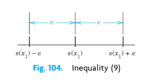
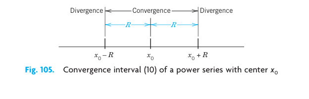
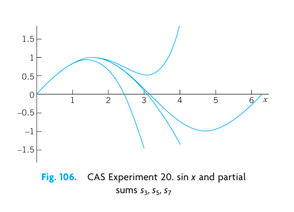
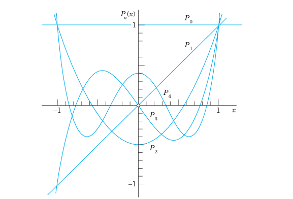
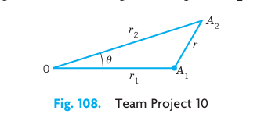
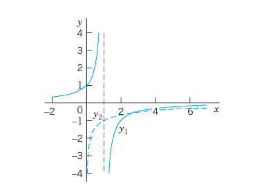
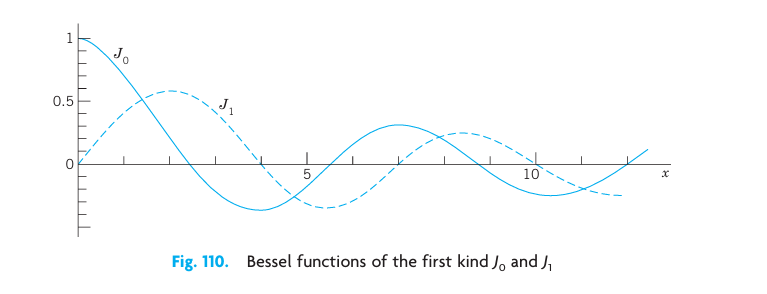
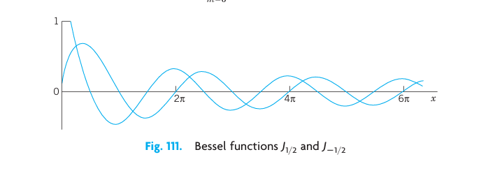
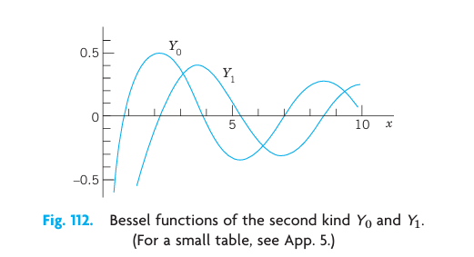

6 Series Solutions of ODEs. Special Functions
In the previous chapters, we have seen that linear ODEs with constant coefficients can be solved by algebraic methods, and that their solutions are elementary functions known from calculus. For ODEs with variable coefficients the situation is more complicated, and their solutions may be nonelementary functions. Legendre’s, Bessel’s, and the hypergeometric equations are important ODEs of this kind. Since these ODEs and their solutions, the Legendre polynomials, Bessel functions, and hypergeometric functions, play an important role in engineering modeling, we shall consider the two standard methods for solving such ODEs.
The first method is called the power series method because it gives solutions in the form of a power series \(a_0 + a_1 x + a_2 x^2 + a_3 x^3 + \cdots\).
The second method is called the Frobenius method and generalizes the first; it gives solutions in power series, multiplied by a logarithmic term \(\ln x\) or a fractional power \(x^r\), in cases such as Bessel’s equation, in which the first method is not general enough.
All those more advanced solutions and various other functions not appearing in calculus are known as higher functions or special functions, which has become a technical term. Each of these functions is important enough to give it a name and investigate its properties and relations to other functions in great detail (take a look into Refs. [GenRef1], [GenRef10], or [All] in App. 1). Your CAS knows practically all functions you will ever need in industry or research labs, but it is up to you to find your way through this vast terrain of formulas. The present chapter may give you some help in this task.
COMMENT. You can study this chapter directly after Chap. 2 because it needs no material from Chaps. 3 or 4.
Prerequisite: Chap. 2. Section that may be omitted in a shorter course: sec-bessel-functions-y-nu. References and Answers to Problems: App. 1 Part A, and App. 2.
6.1 Power Series Method
The power series method is the standard method for solving linear ODEs with variable coefficients. It gives solutions in the form of power series. These series can be used for computing values, graphing curves, proving formulas, and exploring properties of solutions, as we shall see. In this section we begin by explaining the idea of the power series method.
From calculus we remember that a power series (in powers of \(x - x_0\)) is an infinite series of the form \[ \sum_{m=0}^{\infty} a_m (x - x_0)^m = a_0 + a_1(x - x_0) + a_2(x - x_0)^2 + \cdots \tag{6.1}\]
Here, \(x\) is a variable, \(a_0, a_1, a_2, \dots\) are constants, called the coefficients of the series, and \(x_0\) is a constant, called the center of the series. In particular, if \(x_0 = 0\), we obtain a power series in powers of \(x\): \[ \sum_{m=0}^{\infty} a_m x^m = a_0 + a_1 x + a_2 x^2 + a_3 x^3 + \cdots \tag{6.2}\]
We shall assume that all variables and constants are real. We note that the term “power series” usually refers to a series of the form (Equation eq-sec51-1) or ( eq-sec51-2 but does not include series of negative or fractional powers of \(x\). We use \(m\) as the summation letter, reserving \(n\) as a standard notation in the Legendre and Bessel equations for integer values of the parameter.
6.1.1 EXAMPLE 1 Familiar Power Series
Familiar Power Series are the Maclaurin series: \[ \frac{1}{1 - x} = \sum_{m=0}^{\infty} x^m = 1 + x + x^2 + \cdots \quad (|x| < 1, \text{ geometric series}) \] \[ e^x = \sum_{m=0}^{\infty} \frac{x^m}{m!} = 1 + x + \frac{x^2}{2!} + \frac{x^3}{3!} + \cdots \] \[ \cos x = \sum_{m=0}^{\infty} \frac{(-1)^m x^{2m}}{(2m)!} = 1 - \frac{x^2}{2!} + \frac{x^4}{4!} - \cdots \] \[ \sin x = \sum_{m=0}^{\infty} \frac{(-1)^m x^{2m+1}}{(2m+1)!} = x - \frac{x^3}{3!} + \frac{x^5}{5!} - \cdots \]
6.1.2 Idea and Technique of the Power Series Method
The idea of the power series method for solving linear ODEs seems natural, once we know that the most important ODEs in applied mathematics have solutions of this form. We explain the idea by an ODE that can readily be solved otherwise.
6.1.3 EXAMPLE 2 Power Series Solution
Solve \(y' - y = 0\).
Solution. In the first step we insert \[ y = a_0 + a_1 x + a_2 x^2 + a_3 x^3 + \cdots = \sum_{m=0}^{\infty} a_m x^m \] and the series obtained by termwise differentiation \[ y' = a_1 + 2 a_2 x + 3 a_3 x^2 + \cdots = \sum_{m=1}^{\infty} m a_m x^{m-1} \tag{6.3}\] into the ODE: \[ (a_1 + 2 a_2 x + 3 a_3 x^2 + \cdots) - (a_0 + a_1 x + a_2 x^2 + \cdots) = 0 \] Then we collect like powers of \(x\), finding \[ (a_1 - a_0) + (2 a_2 - a_1)x + (3 a_3 - a_2)x^2 + \cdots = 0 \] Equating the coefficient of each power of \(x\) to zero, we have \[ a_1 - a_0 = 0, \quad 2 a_2 - a_1 = 0, \quad 3 a_3 - a_2 = 0, \quad \dots \] Solving these equations, we may express \(a_1, a_2, \dots\) in terms of \(a_0\), which remains arbitrary: \[ a_1 = a_0, \quad a_2 = \frac{a_1}{2} = \frac{a_0}{2!}, \quad a_3 = \frac{a_2}{3} = \frac{a_0}{3!}, \quad \dots \] With these values of the coefficients, the series solution becomes the familiar general solution \[ y = a_0 + a_0 x + \frac{a_0}{2!} x^2 + \frac{a_0}{3!} x^3 + \cdots = a_0 \left( 1 + x + \frac{x^2}{2!} + \frac{x^3}{3!} + \cdots \right) = a_0 e^x \] Test your comprehension by solving \(y'' + y = 0\) by power series. You should get the result \(y = a_0 \cos x + a_1 \sin x\).
We now describe the method in general and justify it after the next example. For a given ODE \[ y'' + p(x)y' + q(x)y = 0 \tag{6.4}\] we first represent \(p(x)\) and \(q(x)\) by power series in powers of \(x\) (or of \(x - x_0\) if solutions in powers of \(x - x_0\) are wanted). Often \(p(x)\) and \(q(x)\) are polynomials, and then nothing needs to be done in this first step. Next we assume a solution in the form of a power series (Equation eq-sec51-2) with unknown coefficients and insert it as well as (Equation eq-sec51-3) and \[ y'' = 2a_2 + 3 \cdot 2 a_3 x + 4 \cdot 3 a_4 x^2 + \cdots = \sum_{m=2}^{\infty} m(m-1)a_m x^{m-2} \tag{6.5}\] into the ODE. Then we collect like powers of \(x\) and equate the sum of the coefficients of each occurring power of \(x\) to zero, starting with the constant terms, then taking the terms containing \(x\), then the terms in \(x^2\), and so on. This gives equations from which we can determine the unknown coefficients of (Equation eq-sec51-2) successively.
6.1.4 EXAMPLE 3 A Special Legendre Equation
The ODE \[ (1 - x^2)y'' - 2xy' + 2y = 0 \] occurs in models exhibiting spherical symmetry. Solve it.
Solution. Substitute (Equation eq-sec51-2), (Equation eq-sec51-3), and (Equation eq-sec51-5) into the ODE. \((1 - x^2)y''\) gives two series, one for \(y''\) and one for \(-x^2 y''\). In the term \(-2xy'\) use (Equation eq-sec51-3) and in \(2y\) use (Equation eq-sec51-2). Write like powers of \(x\) vertically aligned. This gives \[ \begin{aligned} y'' &= 2 a_2 + 6 a_3 x + 12 a_4 x^2 + 20 a_5 x^3 + 30 a_6 x^4 + \cdots \\ -x^2 y'' &= \quad\quad\quad - 2 a_2 x^2 - 6 a_3 x^3 - 12 a_4 x^4 - \cdots \\ -2xy' &= \quad\quad - 2 a_1 x - 4 a_2 x^2 - 6 a_3 x^3 - 8 a_4 x^4 - \cdots \\ 2y &= 2 a_0 + 2 a_1 x + 2 a_2 x^2 + 2 a_3 x^3 + 2 a_4 x^4 + \cdots \end{aligned} \] Add terms of like powers of \(x\). For each power \(x^0, x, x^2, \dots\) equate the sum obtained to zero. Denote these sums by [0] (constant terms), [1] (first power of \(x\)), and so on: | Sum | Power | Equations | |—|—|—| | [0] | [\(x^0\)] | \(2 a_2 + 2 a_0 = 0\), hence \(a_2 = -a_0\) | | [1] | [\(x\)] | \(6 a_3 = 0\), hence \(a_3 = 0\) | | [2] | [\(x^2\)] | \(12 a_4 - 4 a_2 = 0\), hence \(a_4 = \frac{4}{12} a_2 = -\frac{1}{3} a_0\) | | [3] | [\(x^3\)] | \(20 a_5 = 0\) since \(a_3 = 0\), hence \(a_5 = 0\) | | [4] | [\(x^4\)] | \(30 a_6 - 18 a_4 = 0\), hence \(a_6 = \frac{18}{30} a_4 = \frac{18}{30} \left(-\frac{1}{3}\right)a_0 = -\frac{1}{5} a_0\) |
This gives the solution \[ y = a_1 x + a_0 \left( 1 - x^2 - \frac{1}{3} x^4 - \frac{1}{5} x^6 - \cdots \right) \] \(a_0\) and \(a_1\) remain arbitrary. Hence, this is a general solution that consists of two solutions: \(x\) and \(1 - x^2 - \frac{1}{3} x^4 - \frac{1}{5} x^6 - \cdots\). These two solutions are members of families of functions called Legendre polynomials \(P_n(x)\) and Legendre functions \(Q_n(x)\); here we have \(x = P_1(x)\) and \(1 - x^2 - \frac{1}{3} x^4 - \frac{1}{5} x^6 - \cdots = -Q_1(x)\). The minus is by convention. The index 1 is called the order of these two functions and here the order is 1. More on Legendre polynomials in the next section.
6.1.5 Theory of the Power Series Method
The \(n\)th partial sum of (Equation eq-sec51-1) is \[ s_n(x) = a_0 + a_1(x - x_0) + a_2(x - x_0)^2 + \cdots + a_n(x - x_0)^n \tag{6.6}\] where \(n = 0, 1, \dots\). If we omit the terms of \(s_n\) from (Equation eq-sec51-1), the remaining expression is \[ R_n(x) = a_{n+1}(x - x_0)^{n+1} + a_{n+2}(x - x_0)^{n+2} + \cdots \tag{6.7}\] This expression is called the remainder of (Equation eq-sec51-1) after the term \(a_n(x - x_0)^n\). For example, in the case of the geometric series \[ 1 + x + x^2 + \cdots + x^n + \cdots \] we have \[ \begin{aligned} s_0 &= 1, & R_0 &= x + x^2 + x^3 + \cdots \\ s_1 &= 1 + x, & R_1 &= x^2 + x^3 + x^4 + \cdots \\ s_2 &= 1 + x + x^2, & R_2 &= x^3 + x^4 + x^5 + \cdots, \quad \text{etc.} \end{aligned} \]
In this way we have now associated with (Equation eq-sec51-1) the sequence of the partial sums \(s_0(x), s_1(x), s_2(x), \dots\). If for some \(x = x_1\) this sequence converges, say, \[ \lim_{n \to \infty} s_n(x_1) = s(x_1) \] then the series (Equation eq-sec51-1) is called convergent at \(x = x_1\), the number \(s(x_1)\) is called the value or sum of (Equation eq-sec51-1) at \(x_1\), and we write \[ s(x_1) = \sum_{m=0}^{\infty} a_m (x_1 - x_0)^m \] Then we have for every \(n\), \[ s(x_1) = s_n(x_1) + R_n(x_1) \tag{6.8}\] If that sequence diverges at \(x = x_1\), the series (Equation eq-sec51-1) is called divergent at \(x = x_1\). In the case of convergence, for any positive \(\epsilon\) there is an \(N\) (depending on \(\epsilon\)) such that, by (Equation eq-sec51-8) \[ |R_n(x_1)| = |s(x_1) - s_n(x_1)| < \epsilon \quad \text{for all } n > N \tag{6.9}\]
Geometrically, this means that all \(s_n(x_1)\) with \(n > N\) lie between \(s(x_1) - \epsilon\) and \(s(x_1) + \epsilon\) (Figure fig-5-1). Practically, this means that in the case of convergence we can approximate the sum \(s(x_1)\) of (Equation eq-sec51-1) at \(x_1\) by \(s_n(x_1)\) as accurately as we please, by taking \(n\) large enough.

Where does a power series converge? Now if we choose \(x = x_0\) in (Equation eq-sec51-1), the series reduces to the single term \(a_0\) because the other terms are zero. Hence the series converges at \(x_0\). In some cases this may be the only value of \(x\) for which (Equation eq-sec51-1) converges. If there are other values of \(x\) for which the series converges, these values form an interval, the convergence interval. This interval may be finite, as in Figure fig-5-2, with midpoint \(x_0\). Then the series (Equation eq-sec51-1) converges for all \(x\) in the interior of the interval, that is, for all \(x\) for which \[ |x - x_0| < R \tag{6.10}\] and diverges for \(|x - x_0| > R\). The interval may also be infinite, that is, the series may converge for all \(x\).

The quantity \(R\) in Figure fig-5-2 is called the radius of convergence (because for a complex power series it is the radius of disk of convergence). If the series converges for all \(x\), we set \(R = \infty\) (and \(1/R = 0\)). The radius of convergence can be determined from the coefficients of the series by means of each of the formulas \[ \text{(a) } R = 1 \Big/ \lim_{m \to \infty} \sqrt[m]{|a_m|} \qquad \text{(b) } R = 1 \Big/ \lim_{m \to \infty} \left| \frac{a_{m+1}}{a_m} \right| \tag{6.11}\] provided these limits exist and are not zero. If these limits are infinite, then ( eq-sec51-1
6.1.6 EXAMPLE 4 Convergence Radius \(R = \infty, 1, 0\)
For all three series let \(m \to \infty\). - \(e^x = \sum_{m=0}^{\infty} \frac{x^m}{m!} = 1 + x + \frac{x^2}{2!} + \cdots\), \(\left| \frac{a_{m+1}}{a_m} \right| = \frac{1/(m+1)!}{1/m!} = \frac{1}{m+1} \to 0\), \(R = \infty\). - \(\frac{1}{1-x} = \sum_{m=0}^{\infty} x^m = 1 + x + x^2 + \cdots\), \(\left| \frac{a_{m+1}}{a_m} \right| = \frac{1}{1} = 1\), \(R = 1\). - \(\sum_{m=0}^{\infty} m! x^m = 1 + x + 2x^2 + \cdots\), \(\left| \frac{a_{m+1}}{a_m} \right| = \frac{(m+1)!}{m!} = m+1 \to \infty\), \(R = 0\).
Convergence for all \(x\) (\(R = \infty\)) is the best possible case, convergence in some finite interval the usual, and convergence only at the center (\(R = 0\)) is useless.
When do power series solutions exist? Answer: if \(p, q, r\) in the ODEs \[ y'' + p(x)y' + q(x)y = r(x) \tag{6.12}\] have power series representations (Taylor series). More precisely, a function \(f(x)\) is called analytic at a point \(x = x_0\) if it can be represented by a power series in powers of \(x - x_0\) with positive radius of convergence. Using this concept, we can state the following basic theorem, in which the ODE (Equation eq-sec51-12) is in standard form, that is, it begins with the \(y''\). If your ODE begins with, say, \(h(x)y''\), divide it first by \(h(x)\) and then apply the theorem to the resulting new ODE.
6.1.7 THEOREM 1 Existence of Power Series Solutions
If \(p, q,\) and \(r\) in (Equation eq-sec51-12) are analytic at \(x = x_0\), then every solution of (Equation eq-sec51-12) is analytic at \(x = x_0\) and can thus be represented by a power series in powers of \(x - x_0\) with radius of convergence \(R > 0\).
The proof of this theorem requires advanced complex analysis and can be found in Ref. [A11] listed in App. 1. We mention that the radius of convergence \(R\) in Theorem 1 is at least equal to the distance from the point \(x = x_0\) to the point (or points) closest to \(x_0\) at which one of the functions \(p, q, r\), as functions of a complex variable, is not analytic. (Note that that point may not lie on the \(x\)-axis but somewhere in the complex plane.)
6.1.8 Further Theory: Operations on Power Series
In the power series method we differentiate, add, and multiply power series, and we obtain coefficient recursions (as, for instance, in Example 3) by equating the sum of the coefficients of each occurring power of \(x\) to zero. These four operations are permissible in the sense explained in what follows. Proofs can be found in Sec. 15.3.
Termwise Differentiation. A power series may be differentiated term by term. More precisely: if \[ y(x) = \sum_{m=0}^{\infty} a_m (x - x_0)^m \] converges for \(|x - x_0| < R\), where \(R > 0\), then the series obtained by differentiating term by term also converges for those \(x\) and represents the derivative \(y'\) of \(y\) for those \(x\): \[ y'(x) = \sum_{m=1}^{\infty} m a_m (x - x_0)^{m-1} \quad (|x - x_0| < R) \] Similarly for the second and further derivatives.
Termwise Addition. Two power series may be added term by term. More precisely: if the series \[ \sum_{m=0}^{\infty} a_m (x - x_0)^m \quad \text{and} \quad \sum_{m=0}^{\infty} b_m (x - x_0)^m \tag{6.13}\] have positive radii of convergence and their sums are \(f(x)\) and \(g(x)\), then the series \[ \sum_{m=0}^{\infty} (a_m + b_m)(x - x_0)^m \] converges and represents \(f(x) + g(x)\) for each \(x\) that lies in the interior of the convergence interval common to each of the two given series.
Termwise Multiplication. Two power series may be multiplied term by term. More precisely: Suppose that the series (Equation eq-sec51-13) have positive radii of convergence and let \(f(x)\) and \(g(x)\) be their sums. Then the series obtained by multiplying each term of the first series by each term of the second series and collecting like powers of \(x - x_0\), that is, \[ a_0 b_0 + (a_0 b_1 + a_1 b_0)(x - x_0) + (a_0 b_2 + a_1 b_1 + a_2 b_0)(x - x_0)^2 + \cdots = \sum_{m=0}^{\infty} (a_0 b_m + a_1 b_{m-1} + \cdots + a_m b_0)(x - x_0)^m \] converges and represents \(f(x)g(x)\) for each \(x\) in the interior of the convergence interval of each of the two given series.
Vanishing of All Coefficients (“Identity Theorem for Power Series.”) If a power series has a positive radius of convergence and a sum that is identically zero throughout its interval of convergence, then each coefficient of the series must be zero.
6.2 PROBLEM SET
6.2.1 1. WRITING AND LITERATURE PROJECT. Power Series in Calculus
- Write a review (2–3 pages) on power series in calculus. Use your own formulations and examples—do not just copy from textbooks. No proofs.
- Collect and arrange Maclaurin series in a systematic list that you can use for your work.
6.2.2 2–5 REVIEW: RADIUS OF CONVERGENCE
Determine the radius of convergence. Show the details of your work. 2. \(\sum_{m=0}^{\infty} (m+1)m x^m\) 3. \(\sum_{m=0}^{\infty} \frac{(-1)^m}{k^m} x^{2m}\) 4. \(\sum_{m=0}^{\infty} \frac{x^{2m+1}}{(2m+1)!}\) 5. \(\sum_{m=0}^{\infty} \left(\frac{2}{3}\right)^m x^{2m}\)
6.2.3 6–9 SERIES SOLUTIONS BY HAND
Apply the power series method. Do this by hand, not by a CAS, to get a feel for the method, e.g., why a series may terminate, or has even powers only, etc. Show the details. 6. \((1 + x)y' = y\) 7. \(y' = -2xy\) 8. \(xy' - 3y = k\) (\(k = \text{const}\)) 9. \(y'' + y = 0\)
6.2.4 10–14 SERIES SOLUTIONS
Find a power series solution in powers of \(x\). Show the details. 10. \(y'' - y' + xy = 0\) 11. \(y'' - y' + x^2 y = 0\) 12. \((1 - x^2)y'' - 2xy' + 2y = 0\) 13. \(y'' + (1 + x^2)y = 0\) 14. \(y'' - 4xy' + (4x^2 - 2)y = 0\)
6.2.5 15. Shifting summation indices
Shifting summation indices is often convenient or necessary in the power series method. Shift the index so that the power under the summation sign is \(x^m\). Check by writing the first few terms explicitly. \[ \sum_{s=2}^{\infty} \frac{s(s+1)}{s^2 + 1} x^{s-1}, \qquad \sum_{p=1}^{\infty} \frac{p^2}{(p+1)!} x^{p+4} \]
6.2.6 16–19 CAS PROBLEMS. IVPs
Solve the initial value problem by a power series. Graph the partial sums of the powers up to and including \(x^5\). Find the value of the sum \(s\) (5 digits) at \(x_1\). 16. \(y' + 4y = 1, \quad y(0) = 1.25, \quad x_1 = 0.2\) 17. \(y'' + 3xy' + 2y = 0, \quad y(0) = 1, \quad y'(0) = 1, \quad x = 0.5\) 18. \((1 - x^2)y'' - 2xy' + 30y = 0, \quad y(0) = 0, \quad y'(0) = 1.875, \quad x_1 = 0.5\) 19. \((x - 2)y' = xy, \quad y(0) = 4, \quad x_1 = 2\)
6.2.7 20. CAS Experiment. Information from Graphs of Partial Sums
In numerics we use partial sums of power series. To get a feel for the accuracy for various \(x\), experiment with \(\sin x\). Graph partial sums of the Maclaurin series of an increasing number of terms, describing qualitatively the “breakaway points” of these graphs from the graph of \(\sin x\). Consider other Maclaurin series of your choice.

6.3 Legendre’s Equation. Legendre Polynomials \(P_n(x)\)
Legendre’s differential equation1 \[ (1 - x^2)y'' - 2xy' + n(n+1)y = 0 \quad (n \text{ constant}) \tag{6.14}\] is one of the most important ODEs in physics. It arises in numerous problems, particularly in boundary value problems for spheres (take a quick look at Example 1 in Sec. 12.10).
The equation involves a parameter \(n\), whose value depends on the physical or engineering problem. So (Equation eq-sec52-1) is actually a whole family of ODEs. For \(n = 1\) we solved it in Example 3 of sec-power-series-method (look back at it). Any solution of (Equation eq-sec52-1) is called a Legendre function. The study of these and other “higher” functions not occurring in calculus is called the theory of special functions. Further special functions will occur in the next sections.
Dividing (Equation eq-sec52-1) by \(1 - x^2\), we obtain the standard form needed in Theorem 1 of sec-power-series-method and we see that the coefficients \(-2x/(1-x^2)\) and \(n(n+1)/(1-x^2)\) of the new equation are analytic at \(x = 0\), so that we may apply the power series method. Substituting \[ y = \sum_{m=0}^{\infty} a_m x^m \tag{6.15}\] and its derivatives into (Equation eq-sec52-1), and denoting the constant \(n(n+1)\) simply by \(k\), we obtain \[ (1 - x^2) \sum_{m=2}^{\infty} m(m-1)a_m x^{m-2} - 2x \sum_{m=1}^{\infty} m a_m x^{m-1} + k \sum_{m=0}^{\infty} a_m x^m = 0 \]
By writing the first expression as two separate series we have the equation \[ \sum_{m=2}^{\infty} m(m-1)a_m x^{m-2} - \sum_{m=2}^{\infty} m(m-1)a_m x^m - \sum_{m=1}^{\infty} 2m a_m x^m + \sum_{m=0}^{\infty} k a_m x^m = 0 \]
It may help you to write out the first few terms of each series explicitly, as in Example 3 of sec-power-series-method; or you may continue as follows. To obtain the same general power \(x^s\) in all four series, set \(m - 2 = s\) (thus \(m = s + 2\)) in the first series and simply write \(s\) instead of \(m\) in the other three series. This gives \[ \sum_{s=0}^{\infty} (s+2)(s+1)a_{s+2} x^s - \sum_{s=2}^{\infty} s(s-1)a_s x^s - \sum_{s=1}^{\infty} 2s a_s x^s + \sum_{s=0}^{\infty} k a_s x^s = 0 \]
(Note that in the first series the summation begins with \(s = 0\).) Since this equation with the right side 0 must be an identity in \(x\) if (Equation eq-sec52-2) is to be a solution of (Equation eq-sec52-1), the sum of the coefficients of each power of \(x\) on the left must be zero. Now \(x^0\) occurs in the first and fourth series only, and gives [remember that \(k = n(n+1)\)] \[ 2 \cdot 1 a_2 + n(n+1)a_0 = 0 \tag{6.16}\]
\(x^1\) occurs in the first, third, and fourth series and gives \[ 3 \cdot 2 a_3 + [-2 + n(n+1)]a_1 = 0 \tag{6.17}\]
The higher powers \(x^2, x^3, \dots\) occur in all four series and give \[ (s+2)(s+1)a_{s+2} + [-s(s-1) - 2s + n(n+1)]a_s = 0 \tag{6.18}\]
The expression in the brackets \([\cdots]\) can be written \((n-s)(n+s+1)\), as you may readily verify. Solving (Equation eq-sec52-3a) for \(a_2\) and (Equation eq-sec52-3b) for \(a_3\) as well as (Equation eq-sec52-3c) for \(a_{s+2}\), we obtain the general formula \[ a_{s+2} = -\frac{(n-s)(n+s+1)}{(s+2)(s+1)} a_s \quad (s = 0, 1, \dots) \tag{6.19}\]
This is called a recurrence relation or recursion formula. (Its derivation you may verify with your CAS.) It gives each coefficient in terms of the second one preceding it, except for \(a_0\) and \(a_1\), which are left as arbitrary constants. We find successively \[ \begin{aligned} a_2 &= -\frac{n(n+1)}{2!} a_0, \qquad a_3 = -\frac{(n-1)(n+2)}{3!} a_1 \\ a_4 &= -\frac{(n-2)(n+3)}{4 \cdot 3} a_2 = \frac{(n-2)n(n+1)(n+3)}{4!} a_0, \qquad a_5 = -\frac{(n-3)(n+4)}{5 \cdot 4} a_3 = \frac{(n-3)(n-1)(n+2)(n+4)}{5!} a_1 \end{aligned} \] and so on. By inserting these expressions for the coefficients into (Equation eq-sec52-2) we obtain \[ y(x) = a_0 y_1(x) + a_1 y_2(x) \tag{6.20}\] where \[ y_1(x) = 1 - \frac{n(n+1)}{2!} x^2 + \frac{(n-2)n(n+1)(n+3)}{4!} x^4 - \cdots \tag{6.21}\] \[ y_2(x) = x - \frac{(n-1)(n+2)}{3!} x^3 + \frac{(n-3)(n-1)(n+2)(n+4)}{5!} x^5 - \cdots \tag{6.22}\]
These series converge for \(|x| < 1\) (see Prob. 4; or they may terminate, see below). Since (Equation eq-sec52-6) contains even powers of \(x\) only, while (Equation eq-sec52-7) contains odd powers of \(x\) only, the ratio \(y_1/y_2\) is not a constant, so that \(y_1\) and \(y_2\) are not proportional and are thus linearly independent solutions. Hence (Equation eq-sec52-5) is a general solution of (Equation eq-sec52-1) on the interval \(-1 < x < 1\).
Note that \(x = \pm 1\) are the points at which \(1 - x^2 = 0\), so that the coefficients of the standardized ODE are no longer analytic. So it should not surprise you that we do not get a longer convergence interval of (Equation eq-sec52-6) and (Equation eq-sec52-7), unless these series terminate after finitely many powers. In that case, the series become polynomials.
6.3.1 Polynomial Solutions. Legendre Polynomials \(P_n(x)\)
The reduction of power series to polynomials is a great advantage because then we have solutions for all \(x\), without convergence restrictions. For special functions arising as solutions of ODEs this happens quite frequently, leading to various important families of polynomials; see Refs. [GenRef1], [GenRef10] in App. 1. For Legendre’s equation this happens when the parameter \(n\) is a nonnegative integer because then the right side of (Equation eq-sec52-4) is zero for \(s = n\), so that \(a_{n+2} = 0, a_{n+4} = 0, a_{n+6} = 0, \dots\). Hence if \(n\) is even, \(y_1(x)\) reduces to a polynomial of degree \(n\). If \(n\) is odd, the same is true for \(y_2(x)\). These polynomials, multiplied by some constants, are called Legendre polynomials and are denoted by \(P_n(x)\). The standard choice of such constants is done as follows. We choose the coefficient \(a_n\) of the highest power \(x^n\) as \[ a_n = \frac{(2n)!}{2^n (n!)^2} = \frac{1 \cdot 3 \cdot 5 \cdots (2n-1)}{n!} \quad (n \text{ a positive integer}) \tag{6.23}\] (and \(a_n = 1\) if \(n = 0\)). Then we calculate the other coefficients from (Equation eq-sec52-4), solved for \(a_s\) in terms of \(a_{s+2}\), that is, \[ a_s = -\frac{(s+2)(s+1)}{(n-s)(n+s+1)} a_{s+2} \quad (s \le n - 2) \tag{6.24}\]
The choice (Equation eq-sec52-8) makes \(P_n(1) = 1\) for every \(n\) (see Figure fig-5-4); this motivates (Equation eq-sec52-8). From (Equation eq-sec52-9) with \(s = n - 2\) and (Equation eq-sec52-8) we obtain \[ a_{n-2} = -\frac{n(n-1)}{2(2n-1)} a_n = -\frac{n(n-1)}{2(2n-1)} \cdot \frac{(2n)!}{2^n (n!)^2} \]
Using \((2n)! = 2n(2n-1)(2n-2)!\) in the numerator and \(n! = n(n-1)!\) and \(n! = n(n-1)(n-2)!\) in the denominator, we obtain \[ a_{n-2} = -\frac{n(n-1)2n(2n-1)(2n-2)!}{2(2n-1)2^n n(n-1)! n(n-1)(n-2)!} \] \(n(n-1)2n(2n-1)\) cancels, so that we get \[ a_{n-2} = -\frac{(2n-2)!}{2^n (n-1)! (n-2)!} \]
Similarly, \[ a_{n-4} = -\frac{(n-2)(n-3)}{4(2n-3)} a_{n-2} = \frac{(2n-4)!}{2^n 2! (n-2)! (n-4)!} \] and so on, and in general, when \(n - 2m \ge 0\), \[ a_{n-2m} = (-1)^m \frac{(2n-2m)!}{2^n m! (n-m)! (n-2m)!} \tag{6.25}\]
The resulting solution of Legendre’s differential equation (Equation eq-sec52-1) is called the Legendre polynomial of degree \(n\) and is denoted by \(P_n(x)\). From (Equation eq-sec52-10) we obtain \[ P_n(x) = \sum_{m=0}^{M} (-1)^m \frac{(2n-2m)!}{2^n m! (n-m)! (n-2m)!} x^{n-2m} = \frac{(2n)!}{2^n (n!)^2} x^n - \frac{(2n-2)!}{2^{n-1} 1! (n-1)! (n-2)!} x^{n-2} + - \cdots \tag{6.26}\] where \(M = n/2\) or \((n-1)/2\), whichever is an integer. The first few of these functions are (Figure fig-5-4) \[ \begin{aligned} P_0(x) &= 1, & P_1(x) &= x \\ P_2(x) &= \frac{1}{2}(3x^2 - 1), & P_3(x) &= \frac{1}{2}(5x^3 - 3x) \\ P_4(x) &= \frac{1}{8}(35x^4 - 30x^2 + 3), & P_5(x) &= \frac{1}{8}(63x^5 - 70x^3 + 15x) \end{aligned} \tag{6.27}\] and so on. You may now program (Equation eq-sec52-11) on your CAS and calculate \(P_n(x)\) as needed.

The Legendre polynomials \(P_n(x)\) are orthogonal on the interval \(-1 \le x \le 1\), a basic property to be defined and used in making up “Fourier–Legendre series” in the chapter on Fourier series (see Secs. 11.5–11.6).
6.4 PROBLEM SET
6.4.1 1–5 LEGENDRE POLYNOMIALS AND FUNCTIONS
Legendre functions for \(n = 0\). Show that (Equation eq-sec52-6) with \(n = 0\) gives \(P_0(x) = 1\) and (Equation eq-sec52-7) gives (use \(\ln(1+x) = x - \frac{1}{2} x^2 + \frac{1}{3} x^3 - \cdots\)): \[ y_2(x) = x + \frac{1}{3} x^3 + \frac{1}{5} x^5 + \cdots = \frac{1}{2} \ln \frac{1+x}{1-x} \] Verify this by solving (Equation eq-sec52-1) with \(n = 0\), setting \(z = y'\) and separating variables.
Legendre functions for \(n = 1\). Show that (Equation eq-sec52-7) with \(n = 1\) gives \(y_2(x) = P_1(x) = x\) and (Equation eq-sec52-6) gives \[ y_1(x) = 1 - x^2 - \frac{1}{3} x^4 - \frac{1}{5} x^6 - \cdots = 1 - \frac{1}{2} x \ln \frac{1+x}{1-x} \]
Special \(n\). Derive (Equation eq-sec52-11prime) from (Equation eq-sec52-11).
Legendre’s ODE. Verify that the polynomials in (Equation eq-sec52-11prime) satisfy (Equation eq-sec52-1).
Obtain \(P_6\) and \(P_7\).
6.4.2 6–9 CAS PROBLEMS
Graph \(P_2(x), \dots, P_{10}(x)\) on common axes. For what \(x\) (approximately) and \(n = 2, \dots, 10\) is \(|P_n(x)| < \frac{1}{2}\)?
From what \(n\) on will your CAS no longer produce faithful graphs of \(P_n(x)\)? Why?
Graph \(Q_0(x), Q_1(x)\), and some further Legendre functions.
Substitute \(a_s x^s + a_{s+1} x^{s+1} + a_{s+2} x^{s+2}\) into Legendre’s equation and obtain the coefficient recursion (Equation eq-sec52-4).
TEAM PROJECT. Generating Functions. Generating functions play a significant role in modern applied mathematics (see [GenRef5]). The idea is simple. If we want to study a certain sequence \((f_n(x))\) and can find a function \[ G(u, x) = \sum_{n=0}^{\infty} f_n(x) u^n \] we may obtain properties of \((f_n(x))\) from those of \(G\), which “generates” this sequence and is called a generating function of the sequence.
Legendre polynomials. Show that \[ G(u, x) = \frac{1}{\sqrt{1 - 2xu + u^2}} = \sum_{n=0}^{\infty} P_n(x) u^n \tag{6.28}\] is a generating function of the Legendre polynomials. Hint: Start from the binomial expansion of \(1/\sqrt{1-v}\), then set \(v = 2xu - u^2\), multiply the powers of \(2xu - u^2\) out, collect all the terms involving \(u^n\), and verify that the sum of these terms is \(P_n(x) u^n\).
Potential theory. Let \(A_1\) and \(A_2\) be two points in space (Figure fig-5-5, \(r_2 > 0\)). Using (Equation eq-sec52-12), show that \[ \frac{1}{r} = \frac{1}{\sqrt{r_1^2 + r_2^2 - 2r_1 r_2 \cos \theta}} = \frac{1}{r_2} \sum_{m=0}^{\infty} P_m(\cos \theta) \left( \frac{r_1}{r_2} \right)^m \] This formula has applications in potential theory. (\(Q/r\) is the electrostatic potential at \(A_2\) due to a charge \(Q\) located at \(A_1\). And the series expresses \(1/r\) in terms of the distances of \(A_1\) and \(A_2\) from any origin \(O\) and the angle \(\theta\) between the segments \(OA_1\) and \(OA_2\).)

- Further applications of (Equation eq-sec52-12). Show that \(P_n(1) = 1\), \(P_n(-1) = (-1)^n\), \(P_{2n+1}(0) = 0\), and \(P_{2n}(0) = (-1)^n \cdot 1 \cdot 3 \cdots (2n-1) / [2 \cdot 4 \cdots (2n)]\).
6.4.3 11–15 FURTHER FORMULAS
ODE. Find a solution of \((a^2 - x^2) y'' - 2xy' + n(n+1)y = 0\), \(a \neq 0\), by reduction to the Legendre equation.
Rodrigues’s formula2 Applying the binomial theorem to \((x^2 - 1)^n\), differentiating it \(n\) times term by term, and comparing the result with (Equation eq-sec52-11), show that \[ P_n(x) = \frac{1}{2^n n!} \frac{d^n}{dx^n} [(x^2 - 1)^n] \tag{6.29}\]
Rodrigues’s formula. Obtain (Equation eq-sec52-11prime) from (Equation eq-sec52-13).
Bonnet’s recursion3 Differentiating (Equation eq-sec52-12) with respect to \(u\), using (Equation eq-sec52-12) in the resulting formula, and comparing coefficients of \(u^n\), obtain the Bonnet recursion: \[ (n+1)P_{n+1}(x) = (2n+1)xP_n(x) - nP_{n-1}(x) \quad (n = 1, 2, \dots) \tag{6.30}\] This formula is useful for computations, the loss of significant digits being small (except near zeros). Try (Equation eq-sec52-14) out for a few computations of your own choice.
Associated Legendre functions \(P_n^k(x)\) are needed, e.g., in quantum physics. They are defined by \[ P_n^k(x) = (1 - x^2)^{k/2} \frac{d^k P_n(x)}{dx^k} \tag{6.31}\] and are solutions of the ODE \[ (1 - x^2) y'' - 2xy' + q(x)y = 0 \tag{6.32}\] where \(q(x) = n(n+1) - k^2/(1 - x^2)\). Find \(P_1^1(x), P_2^1(x), P_2^2(x)\), and \(P_4^2(x)\) and verify that they satisfy (Equation eq-sec52-16).
6.5 Extended Power Series Method: Frobenius Method
Several second-order ODEs of considerable practical importance—the famous Bessel equation among them—have coefficients that are not analytic (definition in sec-power-series-method), but are “not too bad,” so that these ODEs can still be solved by series (power series times a logarithm or times a fractional power of \(x\), etc.). Indeed, the following theorem permits an extension of the power series method. The new method is called the Frobenius method.4 Both methods, that is, the power series method and the Frobenius method, have gained in significance due to the use of software in actual calculations.
6.5.1 THEOREM 1 Frobenius Method
Let \(b(x)\) and \(c(x)\) be any functions that are analytic at \(x = 0\). Then the ODE \[ y'' + \frac{b(x)}{x}y' + \frac{c(x)}{x^2}y = 0 \tag{6.33}\] has at least one solution that can be represented in the form \[ y(x) = x^r \sum_{m=0}^{\infty} a_m x^m = x^r (a_0 + a_1 x + a_2 x^2 + \cdots) \quad (a_0 \neq 0) \tag{6.34}\] where the exponent \(r\) may be any (real or complex) number (and \(r\) is chosen so that \(a_0 \neq 0\)).
The ODE (Equation eq-sec53-1) also has a second solution (such that these two solutions are linearly independent) that may be similar to (Equation eq-sec53-2) (with a different \(r\) and different coefficients) or may contain a logarithmic term. (Details in Theorem 2 below.)
For example, Bessel’s equation (to be discussed in the next section) \[ y'' + \frac{1}{x}y' + \left( \frac{x^2 - \nu^2}{x^2} \right) y = 0 \quad (\nu \text{ a parameter}) \] is of the form (Equation eq-sec53-1) with \(b(x) = 1\) and \(c(x) = x^2 - \nu^2\) analytic at \(x = 0\), so that the theorem applies. This ODE could not be handled in full generality by the power series method.
Similarly, the so-called hypergeometric differential equation (see sec-ps-5-3) also requires the Frobenius method. The point is that in (Equation eq-sec53-2) we have a power series times a single power of \(x\) whose exponent \(r\) is not restricted to be a nonnegative integer. (The latter restriction would make the whole expression a power series, by definition; see sec-power-series-method.) The proof of the theorem requires advanced methods of complex analysis and can be found in Ref. [A11] listed in App. 1.
6.5.2 Regular and Singular Points
The following terms are practical and commonly used. A regular point of the ODE \[ y'' + p(x)y' + q(x)y = 0 \] is a point \(x_0\) at which the coefficients \(p\) and \(q\) are analytic. Similarly, a regular point of the ODE \[ \tilde{h}(x)y'' + \tilde{p}(x)y' + \tilde{q}(x)y = 0 \] is an \(x_0\) at which \(\tilde{h}, \tilde{p}, \tilde{q}\) are analytic and \(\tilde{h}(x_0) \neq 0\) (so that we can divide by \(\tilde{h}\) and get the previous standard form). Then the power series method can be applied. If \(x_0\) is not a regular point, it is called a singular point.
6.5.3 Indicial Equation, Indicating the Form of Solutions
We shall now explain the Frobenius method for solving (Equation eq-sec53-1). Multiplication of (Equation eq-sec53-1) by \(x^2\) gives the more convenient form \[ x^2 y'' + x b(x)y' + c(x)y = 0 \tag{6.35}\]
We first expand \(b(x)\) and \(c(x)\) in power series, \[ b(x) = b_0 + b_1 x + b_2 x^2 + \cdots, \qquad c(x) = c_0 + c_1 x + c_2 x^2 + \cdots \] or we do nothing if \(b(x)\) and \(c(x)\) are polynomials. Then we differentiate (Equation eq-sec53-2) term by term, finding \[ \begin{aligned} y'(x) &= \sum_{m=0}^{\infty} (m+r)a_m x^{m+r-1} = x^{r-1} [r a_0 + (r+1)a_1 x + \cdots] \\ y''(x) &= \sum_{m=0}^{\infty} (m+r)(m+r-1)a_m x^{m+r-2} = x^{r-2} [r(r-1)a_0 + (r+1)r a_1 x + \cdots] \end{aligned} \tag{6.36}\]
By inserting all these series into (Equation eq-sec53-1prime) we obtain \[ x^r [r(r-1)a_0 + \cdots] + (b_0 + b_1 x + \cdots) x^r (ra_0 + \cdots) + (c_0 + c_1 x + \cdots) x^r (a_0 + a_1 x + \cdots) = 0 \tag{6.37}\]
We now equate the sum of the coefficients of each power \(x^r, x^{r+1}, x^{r+2}, \dots\) to zero. This yields a system of equations involving the unknown coefficients \(a_m\). The smallest power is \(x^r\) and the corresponding equation is \[ [r(r-1) + b_0 r + c_0] a_0 = 0 \]
Since by assumption \(a_0 \neq 0\), the expression in the brackets must be zero. This gives \[ r(r-1) + b_0 r + c_0 = 0 \tag{6.38}\]
This important quadratic equation is called the indicial equation of the ODE (Equation eq-sec53-1). Its role is as follows. The Frobenius method yields a basis of solutions. One of the two solutions will always be of the form (Equation eq-sec53-2), where \(r\) is a root of (Equation eq-sec53-4). The other solution will be of a form indicated by the indicial equation. There are three cases: - Case 1. Distinct roots not differing by an integer \(1, 2, 3, \dots\). - Case 2. A double root. - Case 3. Roots differing by an integer \(1, 2, 3, \dots\).
Cases 1 and 2 are not unexpected because of the Euler–Cauchy equation (Sec. 2.5), the simplest ODE of the form (Equation eq-sec53-1). Case 1 includes complex conjugate roots \(r_1\) and \(r_2 = \bar{r}_1\) because \(r_1 - r_2 = r_1 - \bar{r}_1 = 2i \operatorname{Im} r_1\) is imaginary, so it cannot be a real integer. The form of a basis will be given in Theorem 2 (which is proved in App. 4), without a general theory of convergence, but convergence of the occurring series can be tested in each individual case as usual. Note that in Case 2 we must have a logarithm, whereas in Case 3 we may or may not.
6.5.4 THEOREM 2 Frobenius Method. Basis of Solutions. Three Cases
Suppose that the ODE (Equation eq-sec53-1) satisfies the assumptions in Theorem 1. Let \(r_1\) and \(r_2\) be the roots of the indicial equation (Equation eq-sec53-4). Then we have the following three cases.
Case 1. Distinct Roots Not Differing by an Integer. A basis is \[ y_1(x) = x^{r_1}(a_0 + a_1 x + a_2 x^2 + \cdots) \tag{6.39}\] and \[ y_2(x) = x^{r_2}(A_0 + A_1 x + A_2 x^2 + \cdots) \tag{6.40}\] with coefficients obtained successively from (Equation eq-sec53-3) with \(r = r_1\) and \(r = r_2\), respectively.
Case 2. Double Root \(r_1 = r_2 = r\). A basis is \[ y_1(x) = x^r (a_0 + a_1 x + a_2 x^2 + \cdots) \quad \left[ r = \frac{1}{2}(1 - b_0) \right] \tag{6.41}\] (of the same general form as before) and \[ y_2(x) = y_1(x) \ln x + x^r (A_1 x + A_2 x^2 + \cdots) \quad (x > 0) \tag{6.42}\]
Case 3. Roots Differing by an Integer. A basis is \[ y_1(x) = x^{r_1}(a_0 + a_1 x + a_2 x^2 + \cdots) \tag{6.43}\] (of the same general form as before) and \[ y_2(x) = k y_1(x) \ln x + x^{r_2} (A_0 + A_1 x + A_2 x^2 + \cdots) \tag{6.44}\] where the roots are so denoted that \(r_1 - r_2 > 0\) and \(k\) may turn out to be zero.
6.5.5 Typical Applications
Technically, the Frobenius method is similar to the power series method, once the roots of the indicial equation have been determined. However, (Equation eq-sec53-5)–(Equation eq-sec53-10) merely indicate the general form of a basis, and a second solution can often be obtained more rapidly by reduction of order (Sec. 2.1).
6.5.6 EXAMPLE 1 Euler–Cauchy Equation, Illustrating Cases 1 and 2 and Case 3 without a Logarithm
For the Euler–Cauchy equation (Sec. 2.5) \[ x^2 y'' + b_0 x y' + c_0 y = 0 \quad (b_0, c_0 \text{ constant}) \] substitution of \(y = x^r\) gives the auxiliary equation \[ r(r - 1) + b_0 r + c_0 = 0 \] which is the indicial equation and \(y = x^r\) is a very special form of ( eq-sec53-2. For different roots \(r_1, r_2\) we get a basis \(y_1 = x^{r_1}, y_2 = x^{r_2}\), and for a double root \(r\) we get a basis \(x^r, x^r \ln x\). Accordingly, for this simple ODE, Case 3 plays no extra role.
6.5.7 EXAMPLE 2 Illustration of Case 2 (Double Root)
Solve the ODE \[ x(x - 1)y'' + (3x - 1)y' + y = 0 \tag{6.45}\] (This is a special hypergeometric equation, as we shall see in the problem set.)
Solution. Writing (Equation eq-sec53-11) in the standard form (Equation eq-sec53-1), we see that it satisfies the assumptions in Theorem 1. What are \(b(x)\) and \(c(x)\) in ( eq-sec53-11 By inserting (Equation eq-sec53-2) and its derivatives (Equation eq-sec53-2star) into (Equation eq-sec53-11) we obtain \[ \sum_{m=0}^{\infty} (m+r)(m+r-1)a_m x^{m+r} - \sum_{m=0}^{\infty} (m+r)(m+r-1)a_m x^{m+r-1} + 3 \sum_{m=0}^{\infty} (m+r)a_m x^{m+r} - \sum_{m=0}^{\infty} (m+r)a_m x^{m+r-1} + \sum_{m=0}^{\infty} a_m x^{m+r} = 0 \tag{6.46}\]
The smallest power is \(x^{r-1}\), occurring in the second and the fourth series; by equating the sum of its coefficients to zero we have \[ [-r(r-1) - r] a_0 = 0, \quad \text{thus} \quad r^2 = 0 \] Hence this indicial equation has the double root \(r = 0\).
First Solution. We insert this value \(r = 0\) into (Equation eq-sec53-12) and equate the sum of the coefficients of the power \(x^s\) to zero, obtaining \[ s(s-1)a_s - (s+1)s a_{s+1} + 3s a_s - (s+1)a_{s+1} + a_s = 0 \] thus \(a_{s+1} = a_s\). Hence \(a_0 = a_1 = a_2 = \dots\), and by choosing \(a_0 = 1\) we obtain the solution \[ y_1(x) = \sum_{m=0}^{\infty} x^m = \frac{1}{1 - x} \quad (|x| < 1) \]
Second Solution. We get a second independent solution \(y_2\) by the method of reduction of order (Sec. 2.1), substituting \(y_2 = u y_1\) and its derivatives into the equation. This leads to (9), Sec. 2.1, which we shall use in this example, instead of starting reduction of order from scratch (as we shall do in the next example). In (9) of Sec. 2.1 we have \(p = (3x-1)/(x^2-x)\), the coefficient of \(y'\) in (Equation eq-sec53-11) in standard form. By partial fractions, \[ -\int p \, dx = -\int \frac{3x-1}{x(x-1)} \, dx = -\int \left( \frac{2}{x-1} + \frac{1}{x} \right) \, dx = -2 \ln(x-1) - \ln x \]
Hence (9), Sec. 2.1, becomes \[ u' = U = y_1^{-2} e^{-\int p \, dx} = \frac{(x-1)^2}{(x-1)^2 x} = \frac{1}{x}, \quad u = \ln x, \quad y_2 = u y_1 = \frac{\ln x}{1 - x} \] \(y_1\) and \(y_2\) are shown in Figure fig-5-6. These functions are linearly independent and thus form a basis on the interval \(0 < x < 1\) (as well as on \(1 < x < \infty\)).

6.5.8 EXAMPLE 3 Case 3, Second Solution with Logarithmic Term
Solve the ODE \[ (x^2 - x)y'' - xy' + y = 0 \tag{6.47}\]
Solution. Substituting (Equation eq-sec53-2) and (Equation eq-sec53-2star) into (Equation eq-sec53-13), we have \[ (x^2 - x) \sum_{m=0}^{\infty} (m+r)(m+r-1)a_m x^{m+r-2} - x \sum_{m=0}^{\infty} (m+r)a_m x^{m+r-1} + \sum_{m=0}^{\infty} a_m x^{m+r} = 0 \]
We now take \(x^2, x\), and \(x\) inside the summations and collect all terms with power \(x^{m+r}\) and simplify algebraically, \[ \sum_{m=0}^{\infty} (m+r-1)^2 a_m x^{m+r} - \sum_{m=0}^{\infty} (m+r)(m+r-1)a_m x^{m+r-1} = 0 \]
In the first series we set \(m = s\) and in the second \(m = s+1\), thus \(m = s - 1\). Then \[ \sum_{s=0}^{\infty} (s+r-1)^2 a_s x^{s+r} - \sum_{s=-1}^{\infty} (s+r+1)(s+r)a_{s+1} x^{s+r} = 0 \tag{6.48}\]
The lowest power is \(x^{r-1}\) (take \(s = -1\) in the second series) and gives the indicial equation \[ r(r-1) = 0 \] The roots are \(r_1 = 1\) and \(r_2 = 0\). They differ by an integer. This is Case 3.
First Solution. From (Equation eq-sec53-14) with \(r = r_1 = 1\) we have \[ \sum_{s=0}^{\infty} [s^2 a_s - (s+2)(s+1)a_{s+1}] x^{s+1} = 0 \] This gives the recurrence relation \[ a_{s+1} = \frac{s^2}{(s+2)(s+1)} a_s \quad (s = 0, 1, \dots) \] Hence \(a_1 = 0, a_2 = 0, \dots\) successively. Taking \(a_0 = 1\), we get as a first solution \(y_1 = x^r a_0 = x\).
Second Solution. Applying reduction of order (Sec. 2.1), we substitute \(y_2 = y_1 u = x u, y_2' = x u' + u\) and \(y_2'' = x u'' + 2u'\) into the ODE, obtaining \[ (x^2 - x)(x u'' + 2u') - x(x u' + u) + x u = 0 \] \(xu\) drops out. Division by \(x\) and simplification give \[ (x^2 - x) u'' + (x - 2) u' = 0 \]
From this, using partial fractions and integrating (taking the integration constant zero), we get \[ \frac{u''}{u'} = -\frac{x-2}{x^2-x} = -\frac{2}{x} + \frac{1}{1-x}, \quad \ln u' = \ln \left| \frac{x-1}{x^2} \right| \]
Taking exponents and integrating (again taking the integration constant zero), we obtain \[ u' = \frac{x-1}{x^2} = \frac{1}{x} - \frac{1}{x^2}, \qquad u = \ln x + \frac{1}{x}, \qquad y_2 = x u = x \ln x + 1 \] \(y_1\) and \(y_2\) are linearly independent, and \(y_2\) has a logarithmic term. Hence \(y_1\) and \(y_2\) constitute a basis of solutions for positive \(x\).
The Frobenius method solves the hypergeometric equation, whose solutions include many known functions as special cases (see the problem set). In the next section we use the method for solving Bessel’s equation.
6.6 PROBLEM SET
6.6.1 1. WRITING PROJECT. Power Series Method and Frobenius Method
Write a report of 2–3 pages explaining the difference between the two methods. No proofs. Give simple examples of your own.
6.6.2 2–13 FROBENIUS METHOD
Find a basis of solutions by the Frobenius method. Try to identify the series as expansions of known functions. Show the details of your work. 2. \((x + 2)^2 y'' + (x + 2)y' - y = 0\) 3. \(xy'' + 2y' + xy = 0\) 4. \(xy'' + y' = 0\) 5. \(xy'' + (2x + 1)y' + (x + 1)y = 0\) 6. \(xy'' + 2x^3 y' + (x^2 - 2)y = 0\) 7. \(y'' + (x - 1)y = 0\) 8. \(xy'' + y' - xy = 0\) 9. \(2x(x - 1)y'' - (x + 1)y' + y = 0\) 10. \(xy'' + 2y' + 4xy = 0\) 11. \(xy'' + (2 - 2x)y' + (x - 2)y = 0\) 12. \(x^2 y'' + 6xy' + (4x^2 + 6)y = 0\) 13. \(xy'' + (1 - 2x)y' + (x - 1)y = 0\)
6.6.3 14. TEAM PROJECT. Hypergeometric Equation, Series, and Function
Gauss’s hypergeometric ODE5 is \[ x(1 - x)y'' + [c - (a + b + 1)x]y' - ab y = 0 \tag{6.49}\]
Here, \(a, b, c\) are constants. This ODE is of the form \(p_2 y'' + p_1 y' + p_0 y = 0\), where \(p_2, p_1, p_0\) are polynomials of degree 2, 1, 0, respectively. These polynomials are written so that the series solution takes a most practical form, namely, \[ y_1(x) = 1 + \frac{ab}{1! c} x + \frac{a(a+1)b(b+1)}{2! c(c+1)} x^2 + \frac{a(a+1)(a+2)b(b+1)(b+2)}{3! c(c+1)(c+2)} x^3 + \cdots \tag{6.50}\] This series is called the hypergeometric series. Its sum \(y_1(x)\) is called the hypergeometric function and is denoted by \(F(a, b, c; x)\). Here, \(c \neq 0, -1, -2, \dots\). By choosing specific values of \(a, b, c\) we can obtain an incredibly large number of special functions as solutions of (Equation eq-sec53-15) [see the small sample of elementary functions in part (c)]. This accounts for the importance of (Equation eq-sec53-15).
Hypergeometric series and function. Show that the indicial equation of (Equation eq-sec53-15) has the roots \(r_1 = 0\) and \(r_2 = 1 - c\). Show that for \(r_1 = 0\) the Frobenius method gives (Equation eq-sec53-16). Motivate the name for (Equation eq-sec53-16) by showing that \[ F(1, 1, 1; x) = F(1, b, b; x) = F(a, 1, a; x) = \frac{1}{1 - x} \]
Convergence. For what \(a\) or \(b\) will (Equation eq-sec53-16) reduce to a polynomial? Show that for any other \(a, b, c\) (\(c \neq 0, -1, -2, \dots\)) the series (Equation eq-sec53-16) converges when \(|x| < 1\).
Special cases. Show that \[ \begin{aligned} (1 + x)^n &= F(-n, b, b; -x) \\ (1 - x)^n &= 1 - n x F(1-n, 1, 2; x) \\ \arctan x &= x F\left( \frac{1}{2}, 1, \frac{3}{2}; -x^2 \right) \\ \arcsin x &= x F\left( \frac{1}{2}, \frac{1}{2}, \frac{3}{2}; x^2 \right) \\ \ln(1 + x) &= x F(1, 1, 2; -x) \\ \ln \frac{1+x}{1-x} &= 2 x F\left( \frac{1}{2}, 1, \frac{3}{2}; x^2 \right) \end{aligned} \] Find more such relations from the literature on special functions, for instance, from [GenRef1] in App. 1.
Second solution. Show that for \(r_2 = 1 - c\) the Frobenius method yields the following solution (where \(c \neq 2, 3, 4, \dots\)): \[ y_2(x) = x^{1-c} \left( 1 + \frac{(a-c+1)(b-c+1)}{1! (2-c)} x + \frac{(a-c+1)(a-c+2)(b-c+1)(b-c+2)}{2! (2-c)(3-c)} x^2 + \cdots \right) \tag{6.51}\] Show that \(y_2(x) = x^{1-c} F(a-c+1, b-c+1, 2-c; x)\).
On the generality of the hypergeometric equation. Show that \[ (t^2 + A t + B)\ddot{y} + (C t + D)\dot{y} + K y = 0 \tag{6.52}\] with \(\dot{y} = dy/dt\), etc., constant \(A, B, C, D, K\), and \(t^2 + A t + B = (t - t_1)(t - t_2), t_1 \neq t_2\), can be reduced to the hypergeometric equation with independent variable \[ x = \frac{t - t_1}{t_2 - t_1} \] and parameters related by \(C t_1 + D = -c(t_2 - t_1)\), \(C = a + b + 1\), \(K = ab\). From this you see that (Equation eq-sec53-15) is a “normalized form” of the more general (Equation eq-sec53-18) and that various cases of (Equation eq-sec53-18) can thus be solved in terms of hypergeometric functions.
6.6.4 15–20 HYPERGEOMETRIC ODE
Find a general solution in terms of hypergeometric functions. 15. \(2x(1 - x)y'' - (1 + 6x)y' - 2y = 0\) 16. \(x(1 - x)y'' + \left( \frac{1}{2} + 2x \right)y' - 2y = 0\) 17. \(4x(1 - x)y'' + y' + 8y = 0\) 18. \(4(t^2 - 3t + 2)\ddot{y} - 2\dot{y} + y = 0\) 19. \(2(t^2 - 5t + 6)\ddot{y} + (2t - 3)\dot{y} - 8y = 0\) 20. \(3t(1 + t)\ddot{y} + t\dot{y} - y = 0\)
6.7 Bessel’s Equation. Bessel Functions \(J_\nu(x)\)
One of the most important ODEs in applied mathematics is Bessel’s equation,6 \[ x^2 y'' + xy' + (x^2 - \nu^2)y = 0 \tag{6.53}\] where the parameter \(\nu\) (nu) is a given real number which is positive or zero. Bessel’s equation often appears if a problem shows cylindrical symmetry, for example, as the membranes in Sec. 12.9. The equation satisfies the assumptions of Theorem 1. To see this, divide (Equation eq-sec54-1) by \(x^2\) to get the standard form \(y'' + y'/x + (1 - \nu^2/x^2)y = 0\). Hence, according to the Frobenius theory, it has a solution of the form \[ y(x) = \sum_{m=0}^{\infty} a_m x^{m+r} \quad (a_0 \neq 0) \tag{6.54}\]
Substituting (Equation eq-sec54-2) and its first and second derivatives into Bessel’s equation, we obtain \[ \sum_{m=0}^{\infty} (m+r)(m+r-1)a_m x^{m+r} + \sum_{m=0}^{\infty} (m+r)a_m x^{m+r} + \sum_{m=0}^{\infty} a_m x^{m+r+2} - \nu^2 \sum_{m=0}^{\infty} a_m x^{m+r} = 0 \]
We equate the sum of the coefficients of \(x^{s+r}\) to zero. Note that this power \(x^{s+r}\) corresponds to \(m = s\) in the first, second, and fourth series, and to \(m = s - 2\) in the third series. Hence for \(s = 0\) and \(s = 1\), the third series does not contribute since \(m \ge 0\).
For \(s = 2, 3, \dots\) all four series contribute, so that we get a general formula for all these \(s\). We find \[ \begin{aligned} \text{(a) } & r(r-1)a_0 + r a_0 - \nu^2 a_0 = 0 & (s = 0) \\ \text{(b) } & (r+1)r a_1 + (r+1)a_1 - \nu^2 a_1 = 0 & (s = 1) \\ \text{(c) } & (s+r)(s+r-1)a_s + (s+r)a_s + a_{s-2} - \nu^2 a_s = 0 & (s = 2, 3, \dots) \end{aligned} \tag{6.55}\]
From (Equation eq-sec54-3)(a) we obtain the indicial equation by dropping \(a_0\), \[ (r + \nu)(r - \nu) = 0 \tag{6.56}\] The roots are \(r_1 = \nu\) (\(\ge 0\)) and \(r_2 = -\nu\).
6.7.1 Coefficient Recursion for \(r = r_1 = \nu\)
For \(r = \nu\), Eq. (Equation eq-sec54-3)(b) reduces to \((2\nu + 1)a_1 = 0\). Hence \(a_1 = 0\) since \(\nu \ge 0\). Substituting \(r = \nu\) in (Equation eq-sec54-3)(c) and combining the three terms containing \(a_s\) gives simply \[ (s + 2\nu)s a_s + a_{s-2} = 0 \tag{6.57}\]
Since \(a_1 = 0\) and \(\nu \ge 0\), it follows from (Equation eq-sec54-5) that \(a_3 = 0, a_5 = 0, \dots\). Hence we have to deal only with even-numbered coefficients \(a_s\) with \(s = 2m\). For \(s = 2m\), Eq. (Equation eq-sec54-5) becomes \[ (2m + 2\nu)2m a_{2m} + a_{2m-2} = 0 \]
Solving for \(a_{2m}\) gives the recursion formula \[ a_{2m} = -\frac{1}{2^2 m(\nu + m)} a_{2m-2}, \quad m = 1, 2, \dots \tag{6.58}\]
From (Equation eq-sec54-6) we can now determine \(a_2, a_4, \dots\) successively. This gives \[ a_2 = -\frac{a_0}{2^2 (\nu + 1)} \] \[ a_4 = -\frac{a_2}{2^2 (\nu + 2)} = \frac{a_0}{2^4 2! (\nu + 1)(\nu + 2)} \] and so on, and in general \[ a_{2m} = \frac{(-1)^m a_0}{2^{2m} m! (\nu + 1)(\nu + 2)\cdots(\nu + m)}, \quad m = 1, 2, \dots \tag{6.59}\]
6.7.2 Bessel Functions \(J_n(x)\) for Integer \(\nu = n\)
Integer values of \(\nu\) are denoted by \(n\). This is standard. For \(\nu = n\) the relation (Equation eq-sec54-7) becomes \[ a_{2m} = \frac{(-1)^m a_0}{2^{2m} m! (n + 1)(n + 2)\cdots(n + m)}, \quad m = 1, 2, \dots \tag{6.60}\]
\(a_0\) is still arbitrary, so that the series (Equation eq-sec54-2) with these coefficients would contain this arbitrary factor \(a_0\). This would be a highly impractical situation for developing formulas or computing values of this new function. Accordingly, we have to make a choice. The choice \(a_0 = 1\) would be possible. A simpler series (Equation eq-sec54-2) could be obtained if we could absorb the growing product \((n+1)(n+2)\cdots(n+m)\) into a factorial function \((n+m)!\). What should be our choice? Our choice should be \[ a_0 = \frac{1}{2^n n!} \tag{6.61}\] because then \(n! (n+1)\cdots(n+m) = (n+m)!\) in (Equation eq-sec54-8), so that (Equation eq-sec54-8) simply becomes \[ a_{2m} = \frac{(-1)^m}{2^{2m+n} m! (n+m)!}, \quad m = 1, 2, \dots \tag{6.62}\]
By inserting these coefficients into (Equation eq-sec54-2) and remembering that \(a_1 = 0, a_3 = 0, \dots\) we obtain a particular solution of Bessel’s equation that is denoted by \(J_n(x)\): \[ J_n(x) = x^n \sum_{m=0}^{\infty} \frac{(-1)^m x^{2m}}{2^{2m+n} m! (n+m)!} \quad (n \ge 0) \tag{6.63}\] \(J_n(x)\) is called the Bessel function of the first kind of order \(n\). The series (Equation eq-sec54-11) converges for all \(x\), as the ratio test shows. Hence \(J_n(x)\) is defined for all \(x\). The series converges very rapidly because of the factorials in the denominator.
6.7.3 EXAMPLE 1 Bessel Functions \(J_0(x)\) and \(J_1(x)\)
For \(n = 0\) we obtain from (Equation eq-sec54-11) the Bessel function of order 0: \[ J_0(x) = \sum_{m=0}^{\infty} \frac{(-1)^m x^{2m}}{2^{2m}(m!)^2} = 1 - \frac{x^2}{2^2(1!)^2} + \frac{x^4}{2^4(2!)^2} - \frac{x^6}{2^6(3!)^2} + - \cdots \tag{6.64}\] which looks similar to a cosine (Figure fig-5-7). For \(n = 1\) we obtain the Bessel function of order 1: \[ J_1(x) = \sum_{m=0}^{\infty} \frac{(-1)^m x^{2m+1}}{2^{2m+1}m! (m+1)!} = \frac{x}{2} - \frac{x^3}{2^3 1! 2!} + \frac{x^5}{2^5 2! 3!} - \frac{x^7}{2^7 3! 4!} + - \cdots \tag{6.65}\] which looks similar to a sine (Figure fig-5-7). But the zeros of these functions are not completely regularly spaced (see also Table A1 in App. 5) and the height of the “waves” decreases with increasing \(x\). Heuristically, \(n^2/x^2\) in (Equation eq-sec54-1) in standard form ( eq-sec54-1 is zero (if \(n = 0\)) or small in absolute value for large \(x\), and so is \(y'/x\), so that then Bessel’s equation comes close to \(y'' + y = 0\), the equation of \(\cos x\) and \(\sin x\); also \(y'/x\) acts as a “damping term,” in part responsible for the decrease in height. One can show that for large \(x\), \[ J_n(x) \sim \sqrt{\frac{2}{\pi x}} \cos \left( x - \frac{n\pi}{2} - \frac{\pi}{4} \right) \tag{6.66}\] where \(\sim\) is read “asymptotically equal” and means that for fixed \(n\) the quotient of the two sides approaches 1 as \(x \to \infty\).

6.7.4 Bessel Functions \(J_\nu(x)\) for any \(\nu \ge 0\). Gamma Function
We now proceed from integer \(\nu = n\) to any \(\nu \ge 0\). We had \(a_0 = 1/(2^n n!)\) in (Equation eq-sec54-9). So we have to extend the factorial function \(n!\) to any \(\nu \ge 0\). For this we choose \[ a_0 = \frac{1}{2^\nu \Gamma(\nu+1)} \tag{6.67}\] with the gamma function \(\Gamma(\nu+1)\) defined by \[ \Gamma(\nu+1) = \int_{0}^{\infty} e^{-t} t^\nu \, dt \quad (\nu > -1) \tag{6.68}\] (CAUTION! Note the convention \(\nu+1\) on the left but \(\nu\) in the integral.) Integration by parts gives \[ \Gamma(\nu+1) = \left[ -e^{-t} t^\nu \right]_0^\infty + \nu \int_{0}^{\infty} e^{-t} t^{\nu-1} \, dt = 0 + \nu \Gamma(\nu) \] This is the basic functional relation of the gamma function: \[ \Gamma(\nu+1) = \nu \Gamma(\nu) \tag{6.69}\]
Now from (Equation eq-sec54-16) with \(\nu = 0\) and then by (Equation eq-sec54-17) we obtain \[ \Gamma(1) = \int_{0}^{\infty} e^{-t} \, dt = \left[ -e^{-t} \right]_0^\infty = 0 - (-1) = 1 \] and then \(\Gamma(2) = 1 \cdot \Gamma(1) = 1!\), \(\Gamma(3) = 2 \Gamma(2) = 2!\) and in general \[ \Gamma(n+1) = n! \quad (n = 0, 1, \dots) \tag{6.70}\]
Hence the gamma function generalizes the factorial function to arbitrary positive \(\nu\). Thus (Equation eq-sec54-15) with \(\nu = n\) agrees with (Equation eq-sec54-9). Furthermore, from (Equation eq-sec54-7) with \(a_0\) given by (Equation eq-sec54-15) we first have \[ a_{2m} = \frac{(-1)^m}{2^{2m} m! (\nu+1)(\nu+2)\cdots(\nu+m) 2^\nu \Gamma(\nu+1)} \]
Now (Equation eq-sec54-17) gives \((\nu+1)\Gamma(\nu+1) = \Gamma(\nu+2)\), \((\nu+2)\Gamma(\nu+2) = \Gamma(\nu+3)\) and so on, so that \[ (\nu+1)(\nu+2)\cdots(\nu+m)\Gamma(\nu+1) = \Gamma(\nu+m+1) \]
Hence because of our (standard!) choice (Equation eq-sec54-15) of \(a_0\) the coefficients (Equation eq-sec54-7) are simply \[ a_{2m} = \frac{(-1)^m}{2^{2m+\nu} m! \Gamma(\nu+m+1)} \tag{6.71}\]
With these coefficients and \(r = r_1 = \nu\) we get from (Equation eq-sec54-2) a particular solution of (Equation eq-sec54-1), denoted by \(J_\nu(x)\) and given by \[ J_\nu(x) = x^\nu \sum_{m=0}^{\infty} \frac{(-1)^m x^{2m}}{2^{2m+\nu} m! \Gamma(\nu+m+1)} \tag{6.72}\] \(J_\nu(x)\) is called the Bessel function of the first kind of order \(\nu\). The series (Equation eq-sec54-20) converges for all \(x\), as one can verify by the ratio test.
6.7.5 Discovery of Properties from Series
Bessel functions are a model case for showing how to discover properties and relations of functions from series by which they are defined. Bessel functions satisfy an incredibly large number of relationships—look at Ref. [A13] in App. 1; also, find out what your CAS knows. In Theorem 3 we shall discuss four formulas that are backbones in applications and theory.
6.7.6 THEOREM 3 Derivatives, Recursions
The derivative of \(J_\nu(x)\) with respect to \(x\) can be expressed by \(J_{\nu-1}(x)\) or \(J_{\nu+1}(x)\) by the formulas \[ \text{(a) } [x^\nu J_\nu(x)]' = x^\nu J_{\nu-1}(x) \qquad \text{(b) } [x^{-\nu} J_\nu(x)]' = -x^{-\nu} J_{\nu+1}(x) \tag{6.73}\]
Furthermore, \(J_\nu(x)\) and its derivative satisfy the recurrence relations \[ \text{(c) } J_{\nu-1}(x) + J_{\nu+1}(x) = \frac{2\nu}{x} J_\nu(x) \qquad \text{(d) } J_{\nu-1}(x) - J_{\nu+1}(x) = 2 J_\nu'(x) \tag{6.74}\]
PROOF (a) We multiply (Equation eq-sec54-20) by \(x^\nu\) and take \(x^{2\nu}\) under the summation sign. Then we have \[ x^\nu J_\nu(x) = \sum_{m=0}^{\infty} \frac{(-1)^m x^{2m+2\nu}}{2^{2m+\nu} m! \Gamma(\nu+m+1)} \]
We now differentiate this, cancel a factor 2, pull \(x^{2\nu-1}\) out, and use the functional relationship \(\Gamma(\nu+m+1) = (\nu+m)\Gamma(\nu+m)\) see ( eq-sec54-17. Then (Equation eq-sec54-20) with \(\nu-1\) instead of \(\nu\) shows that we obtain the right side of (Equation eq-sec54-21ab)(a). Indeed, \[ (x^\nu J_\nu)' = \sum_{m=0}^{\infty} \frac{(-1)^m 2(m+\nu) x^{2m+2\nu-1}}{2^{2m+\nu} m! \Gamma(\nu+m+1)} = x^\nu x^{\nu-1} \sum_{m=0}^{\infty} \frac{(-1)^m x^{2m}}{2^{2m+\nu-1} m! \Gamma(\nu+m)} \]
- Similarly, we multiply (Equation eq-sec54-20) by \(x^{-\nu}\), so that \(x^\nu\) in (Equation eq-sec54-20) cancels. Then we differentiate, cancel \(2m\), and use \(m! = m(m-1)!\). This gives, with \(m = s+1\), \[ (x^{-\nu} J_\nu)' = \sum_{m=1}^{\infty} \frac{(-1)^m x^{2m-1}}{2^{2m+\nu-1} (m-1)! \Gamma(\nu+m+1)} = \sum_{s=0}^{\infty} \frac{(-1)^{s+1} x^{2s+1}}{2^{2s+\nu+1} s! \Gamma(\nu+s+2)} \] Equation (Equation eq-sec54-20) with \(\nu+1\) instead of \(\nu\) and \(s\) instead of \(m\) shows that the expression on the right is \(-x^{-\nu} J_{\nu+1}(x)\). This proves (Equation eq-sec54-21ab)(b).
(c), (d) We perform the differentiation in (Equation eq-sec54-21ab)(a). Then we do the same in (Equation eq-sec54-21ab)(b) and multiply the result on both sides by \(x^\nu\). This gives \[ \begin{aligned} \text{(a*)} & \quad \nu x^{\nu-1} J_\nu + x^\nu J_\nu' = x^\nu J_{\nu-1} \\ \text{(b*)} & \quad -\nu x^{-\nu-1} J_\nu + x^{-\nu} J_\nu' = -x^{-\nu} J_{\nu+1} \end{aligned} \] Subtracting (b) from (a) and dividing the result by \(x^\nu\) gives (Equation eq-sec54-21cd)(c). Adding (a) and (b) and dividing the result by \(x^\nu\) gives (Equation eq-sec54-21cd)(d).
6.7.7 EXAMPLE 2 Application of Theorem 1 in Evaluation and Integration
Formula (Equation eq-sec54-21cd)(c) can be used recursively in the form \[ J_{\nu+1}(x) = \frac{2\nu}{x} J_\nu(x) - J_{\nu-1}(x) \] for calculating Bessel functions of higher order from those of lower order. For instance, \(J_2(x) = 2J_1(x)/x - J_0(x)\), so that \(J_2\) can be obtained from tables of \(J_0\) and \(J_1\) (in App. 5 or, more accurately, in Ref. [GenRef1] in App. 1).
To illustrate how Theorem 3 helps in integration, we use (Equation eq-sec54-21ab)(b) with \(\nu = 3\) integrated on both sides. This evaluates, for instance, the integral \[ I = \int_{1}^{2} x^{-3} J_4(x) \, dx = \left[ -x^{-3} J_3(x) \right]_1^2 = -\frac{1}{8} J_3(2) + J_3(1) \]
A table of \(J_3\) (on p. 398 of Ref. [GenRef1]) or your CAS will give you \[ -\frac{1}{8} \cdot 0.128943 + 0.019563 = 0.003445 \]
Your CAS (or a human computer in precomputer times) obtains \(J_3\) from (Equation eq-sec54-21cd), first using (Equation eq-sec54-21cd)(c) with \(\nu = 2\), that is, \(J_3 = 4x^{-1} J_2 - J_1\), then (Equation eq-sec54-21cd)(c) with \(\nu = 1\), that is, \(J_2 = 2x^{-1} J_1 - J_0\). Together, \[ \begin{aligned} I &= \left. x^{-3} (4x^{-1}(2x^{-1} J_1 - J_0) - J_1) \right|_1^2 \\ &= -\frac{1}{8} [2J_1(2) - 2J_0(2) - J_1(2)] + [8J_1(1) - 4J_0(1) - J_1(1)] \\ &= -\frac{1}{8} J_1(2) + \frac{1}{4} J_0(2) + 7 J_1(1) - 4 J_0(1) \end{aligned} \] This is what you get, for instance, with Maple if you type int(...). And if you type evalf(int(...)), you obtain 0.003445448, in agreement with the result near the beginning of the example.
6.7.8 Bessel Functions \(J_\nu\) with Half-Integer \(\nu\) Are Elementary
We discover this remarkable fact as another property obtained from the series (Equation eq-sec54-20) and confirm it in the problem set by using Bessel’s ODE.
6.7.9 EXAMPLE 3 Elementary Bessel Functions \(J_\nu\) with \(\nu = \pm\frac{1}{2}, \pm\frac{3}{2}, \pm\frac{5}{2}, \dots\). The Value \(\Gamma(\frac{1}{2})\)
We first prove (Figure fig-5-8) \[ \text{(a) } J_{1/2}(x) = \sqrt{\frac{2}{\pi x}} \sin x \qquad \text{(b) } J_{-1/2}(x) = \sqrt{\frac{2}{\pi x}} \cos x \tag{6.75}\]
The series (Equation eq-sec54-20) with \(\nu = \frac{1}{2}\) is \[ J_{1/2}(x) = \sqrt{x} \sum_{m=0}^{\infty} \frac{(-1)^m x^{2m}}{2^{2m+1/2} m! \Gamma(m + \frac{3}{2})} = \sqrt{\frac{2}{x}} \sum_{m=0}^{\infty} \frac{(-1)^m x^{2m+1}}{2^{2m+1} m! \Gamma(m + \frac{3}{2})} \]
The denominator can be written as a product \(AB\), where use ( eq-sec54-17 \[ \begin{aligned} A &= 2^m m! = 2m(2m-2)(2m-4)\cdots 4 \cdot 2 \\ B &= 2^{m+1} \Gamma\left(m+\frac{3}{2}\right) = 2^{m+1} \left(m+\frac{1}{2}\right)\left(m-\frac{1}{2}\right)\cdots \frac{3}{2} \cdot \frac{1}{2} \Gamma\left(\frac{1}{2}\right) = (2m+1)(2m-1)\cdots 3 \cdot 1 \cdot \sqrt{\pi} \end{aligned} \] here we used (proof below) \[ \Gamma\left(\frac{1}{2}\right) = \sqrt{\pi} \tag{6.76}\]
The product of the right sides of \(A\) and \(B\) can be written \[ AB = (2m+1)2m(2m-1)\cdots 3 \cdot 2 \cdot 1 \sqrt{\pi} = (2m+1)!\sqrt{\pi} \]
Hence \[ J_{1/2}(x) = \sqrt{\frac{2}{\pi x}} \sum_{m=0}^{\infty} \frac{(-1)^m x^{2m+1}}{(2m+1)!} = \sqrt{\frac{2}{\pi x}} \sin x \]

This proves (Equation eq-sec54-22)(a). Differentiation and the use of (Equation eq-sec54-21ab)(a) with \(\nu = \frac{1}{2}\) now gives \[ [\sqrt{x} J_{1/2}(x)]' = \sqrt{\frac{2}{\pi}} \cos x = x^{1/2} J_{-1/2}(x) \]
This proves (Equation eq-sec54-22)(b). From (Equation eq-sec54-22) follow further formulas successively by (Equation eq-sec54-21cd)(c), used as in Example 2. We finally prove \(\Gamma(\frac{1}{2}) = \sqrt{\pi}\) by a standard trick worth remembering. In (Equation eq-sec54-16) we set \(t = u^2\). Then \(dt = 2u \, du\) and \[ \Gamma\left(\frac{1}{2}\right) = \int_{0}^{\infty} e^{-t} t^{-1/2} \, dt = 2 \int_{0}^{\infty} e^{-u^2} \, du \]
We square on both sides, write \(v\) instead of \(u\) in the second integral, and then write the product of the integrals as a double integral: \[ \left[\Gamma\left(\frac{1}{2}\right)\right]^2 = 4 \int_{0}^{\infty} e^{-u^2} \, du \int_{0}^{\infty} e^{-v^2} \, dv = 4 \int_{0}^{\infty} \int_{0}^{\infty} e^{-(u^2+v^2)} \, du \, dv \]
We now use polar coordinates \(r, \theta\) by setting \(u = r \cos \theta, v = r \sin \theta\). Then the element of area is \(du \, dv = r \, dr \, d\theta\) and we have to integrate over \(r\) from 0 to \(\infty\) and over \(\theta\) from 0 to \(\pi/2\) (that is, over the first quadrant of the \(uv\)-plane): \[ \left[\Gamma\left(\frac{1}{2}\right)\right]^2 = 4 \int_{0}^{\pi/2} \int_{0}^{\infty} e^{-r^2} r \, dr \, d\theta = 4 \cdot \frac{\pi}{2} \int_{0}^{\infty} e^{-r^2} r \, dr = 2 \left( -\frac{1}{2} \right) e^{-r^2} \Big|_0^\infty = \pi \] By taking the square root on both sides we obtain (Equation eq-sec54-23).
6.7.10 General Solution. Linear Dependence
For a general solution of Bessel’s equation (Equation eq-sec54-1) in addition to \(J_\nu\) we need a second linearly independent solution. For \(\nu\) not an integer this is easy. Replacing \(\nu\) by \(-\nu\) in (Equation eq-sec54-20), we have \[ J_{-\nu}(x) = x^{-\nu} \sum_{m=0}^{\infty} \frac{(-1)^m x^{2m}}{2^{2m-\nu} m! \Gamma(m - \nu + 1)} \tag{6.77}\]
Since Bessel’s equation involves \(\nu^2\), the functions \(J_\nu\) and \(J_{-\nu}\) are solutions of the equation for the same \(\nu\). If \(\nu\) is not an integer, they are linearly independent, because the first terms in (Equation eq-sec54-20) and in (Equation eq-sec54-24) are finite nonzero multiples of \(x^\nu\) and \(x^{-\nu}\). Thus, if \(\nu\) is not an integer, a general solution of Bessel’s equation for all \(x \neq 0\) is \[ y(x) = c_1 J_\nu(x) + c_2 J_{-\nu}(x) \]
This cannot be the general solution for an integer \(\nu = n\) because, in that case, we have linear dependence. It can be seen that the first terms in (Equation eq-sec54-20) and (Equation eq-sec54-24) are finite nonzero multiples of \(x^n\) and \(x^{-n}\), respectively. This means that, for any integer \(\nu = n\), we have linear dependence because \[ J_{-n}(x) = (-1)^n J_n(x) \quad (n = 1, 2, \dots) \tag{6.78}\]
PROOF To prove (Equation eq-sec54-25), we use (Equation eq-sec54-24) and let \(\nu\) approach a positive integer \(n\). Then the gamma function in the coefficients of the first \(n\) terms becomes infinite (see Fig. 553 in App. A3.1), the coefficients become zero, and the summation starts with \(m = n\). Since in this case \(\Gamma(m - n + 1) = (m - n)!\) by (Equation eq-sec54-18), we obtain \[ J_{-n}(x) = \sum_{m=n}^{\infty} \frac{(-1)^m x^{2m-n}}{2^{2m-n} m! (m-n)!} = \sum_{s=0}^{\infty} \frac{(-1)^{n+s} x^{2s+n}}{2^{2s+n} (n+s)! s!} \quad (m = n+s) \tag{6.79}\]
The last series represents \((-1)^n J_n(x)\), as you can see from (Equation eq-sec54-11) with \(m\) replaced by \(s\). This completes the proof.
The difficulty caused by (Equation eq-sec54-25) will be overcome in the next section by introducing further Bessel functions, called of the second kind and denoted by \(Y_\nu\).
6.8 PROBLEM SET
6.8.1 1. Convergence
Show that the series (Equation eq-sec54-11) converges for all \(x\). Why is the convergence very rapid?
6.8.2 2–10 ODES REDUCIBLE TO BESSEL’S ODE
This is just a sample of such ODEs; some more follow in the next problem set. Find a general solution in terms of \(J_\nu\) and \(J_{-\nu}\) or indicate when this is not possible. Use the indicated substitutions. Show the details of your work. 2. \(x^2 y'' + xy' + (x^2 - \frac{4}{49})y = 0\) 3. \(xy'' + y' + \frac{1}{4} y = 0 \quad (\sqrt{x} = z)\) 4. \(y'' + (e^{-2x} - \frac{1}{9})y = 0 \quad (e^{-x} = z)\) 5. Two-parameter ODE \(x^2 y'' + xy' + (\lambda^2 x^2 - \nu^2)y = 0 \quad (\lambda x = z)\) 6. \(x^2 y'' + \frac{1}{4}(x + \frac{3}{4})y = 0 \quad (y = u\sqrt{x}, \sqrt{x} = z)\) 7. \(x^2 y'' + xy' + \frac{1}{4}(x^2 - 1)y = 0 \quad (x = 2z)\) 8. \((2x + 1)^2 y'' + 2(2x + 1)y' + 16x(x+1)y = 0 \quad (2x + 1 = z)\) 9. \(xy'' + (2\nu + 1)y' + xy = 0 \quad (y = x^{-\nu} u)\) 10. \(x^2 y'' + (1 - 2\nu)xy' + \nu^2(x^{2\nu} + 1 - \nu^2)y = 0 \quad (y = x^\nu u, x^\nu = z)\)
6.8.3 11. CAS EXPERIMENT. Change of Coefficient
Find and graph (on common axes) the solutions of \[ y'' + kx^{-1}y' + y = 0, \quad y(0) = 1, \quad y'(0) = 0 \] for \(k = 0, 1, 2, \dots, 10\) (or as far as you get useful graphs). For what \(k\) do you get elementary functions? Why? Try for noninteger \(k\), particularly between 0 and 2, to see the continuous change of the curve. Describe the change of the location of the zeros and of the extrema as \(k\) increases from 0. Can you interpret the ODE as a model in mechanics, thereby explaining your observations?
6.8.4 12. CAS EXPERIMENT. Bessel Functions for Large \(x\)
- Graph \(J_n(x)\) for \(n = 0, \dots, 5\) on common axes.
- Experiment with (Equation eq-sec54-14) for integer \(n\). Using graphs, find out from which \(x = x_n\) on the curves of (Equation eq-sec54-11) and (Equation eq-sec54-14) practically coincide. How does \(x_n\) change with \(n\)?
- What happens in (b) if \(n = \pm\frac{1}{2}\)? (Our usual notation in this case would be \(\nu\).)
- How does the error of (Equation eq-sec54-14) behave as a function of \(x\) for fixed \(n\)? Error = exact value minus approximation ( eq-sec54-14
- Show from the graphs that \(J_0(x)\) has extrema where \(J_1(x) = 0\). Which formula proves this? Find further relations between zeros and extrema.
6.8.5 13–15 ZEROS of Bessel functions play a key role in modeling (e.g. of vibrations; see Sec. 12.9)
- Interlacing of zeros. Using (Equation eq-sec54-21ab) and Rolle’s theorem, show that between any two consecutive positive zeros of \(J_n(x)\) there is precisely one zero of \(J_{n+1}(x)\).
- Zeros. Compute the first four positive zeros of \(J_0(x)\) and \(J_1(x)\) from (Equation eq-sec54-14). Determine the error and comment.
- Interlacing of zeros. Using (Equation eq-sec54-21ab) and Rolle’s theorem, show that between any two consecutive zeros of \(J_0(x)\) there is precisely one zero of \(J_1(x)\).
6.8.6 16–18 HALF-INTEGER PARAMETER: APPROACH BY THE ODE
Elimination of first derivative. Show that \(y = uv\) with \(v(x) = \exp\left(-\frac{1}{2} \int p(x) \, dx\right)\) gives from the ODE \(y'' + p(x)y' + q(x)y = 0\) the ODE \[ u'' + \left[ q(x) - \frac{1}{4} p(x)^2 - \frac{1}{2} p'(x) \right] u = 0 \] not containing the first derivative of \(u\).
Bessel’s equation. Show that for (Equation eq-sec54-1) the substitution in Prob. 16 is \(y = u x^{-1/2}\) and gives \[ x^2 u'' + \left( x^2 + \frac{1}{4} - \nu^2 \right) u = 0 \tag{6.80}\]
Elementary Bessel functions. Derive (Equation eq-sec54-22) in Example 3 from (Equation eq-sec54-27).
6.8.7 19–25 APPLICATION OF (Equation eq-sec54-21ab) AND (Equation eq-sec54-21cd): DERIVATIVES, INTEGRALS
Use the powerful formulas (Equation eq-sec54-21ab) and (Equation eq-sec54-21cd) to do Probs. 19–25. Show the details of your work. 19. Derivatives. Show that \(J_0'(x) = -J_1(x)\), \(J_1'(x) = J_0(x) - J_1(x)/x\), \(J_2'(x) = \frac{1}{2}[J_1(x) - J_3(x)]\). 20. Bessel’s equation. Derive (Equation eq-sec54-1) from (Equation eq-sec54-21ab) and (Equation eq-sec54-21cd). 21. Basic integral formula. Show that \[ \int x^\nu J_{\nu-1}(x) \, dx = x^\nu J_\nu(x) + c \] 22. Basic integral formulas. Show that \[ \int x^{-\nu} J_{\nu+1}(x) \, dx = -x^{-\nu} J_\nu(x) + c, \qquad \int J_{\nu+1}(x) \, dx = \int J_{\nu-1}(x) \, dx - 2J_\nu(x) \] 23. Integration. Show that \(\int x^2 J_0(x) \, dx = x^2 J_1(x) + x J_0(x) - \int J_0(x) \, dx\). (The last integral is nonelementary; tables exist, e.g., in Ref. [A13] in App. 1.) 24. Integration. Evaluate \(\int x^{-1} J_4(x) \, dx\). 25. Integration. Evaluate \(\int J_5(x) \, dx\).
6.9 Bessel Functions \(Y_\nu(x)\). General Solution
To obtain a general solution of Bessel’s equation (Equation eq-sec54-1), sec-bessels-equation, for any \(\nu\), we now introduce Bessel functions of the second kind \(Y_\nu(x)\), beginning with the case \(\nu = n = 0\). When \(n = 0\), Bessel’s equation can be written (divide by \(x\)) \[ x y'' + y' + xy = 0 \tag{6.81}\]
Then the indicial equation (Equation eq-sec54-4) in sec-bessels-equation has a double root \(r = 0\). This is Case 2 in sec-frobenius-method. In this case we first have only one solution, \(J_0(x)\). From Equation eq-sec53-8 in sec-frobenius-method we see that the desired second solution must be of the form \[ y_2(x) = J_0(x) \ln x + \sum_{m=1}^{\infty} A_m x^m \tag{6.82}\]
We substitute \(y_2\) and its derivatives \[ \begin{aligned} y_2' &= J_0' \ln x + \frac{J_0}{x} + \sum_{m=1}^{\infty} m A_m x^{m-1} \\ y_2'' &= J_0'' \ln x + \frac{2J_0'}{x} - \frac{J_0}{x^2} + \sum_{m=1}^{\infty} m(m - 1) A_m x^{m-2} \end{aligned} \] into (Equation eq-sec55-1). Then the sum of the three logarithmic terms \(x J_0'' \ln x\), \(J_0' \ln x\), and \(x J_0 \ln x\) is zero because \(J_0\) is a solution of (Equation eq-sec55-1). The terms \(-J_0/x\) and \(J_0/x\) (from \(x y_2''\) and \(y_2'\)) cancel. Hence we are left with \[ 2 J_0' + \sum_{m=1}^{\infty} m(m - 1) A_m x^{m-1} + \sum_{m=1}^{\infty} m A_m x^{m-1} + \sum_{m=1}^{\infty} A_m x^{m+1} = 0 \]
Addition of the first and second series gives \(\sum_{m=1}^{\infty} m^2 A_m x^{m-1}\). The power series of \(J_0'(x)\) is obtained from (Equation eq-sec54-12) in sec-bessels-equation and the use of \(m!/m = (m - 1)!\) in the form \[ J_0'(x) = \sum_{m=1}^{\infty} \frac{(-1)^m 2m x^{2m-1}}{2^{2m}(m!)^2} = \sum_{m=1}^{\infty} \frac{(-1)^m x^{2m-1}}{2^{2m-1} m! (m - 1)!} \]
Together with \(\sum_{m=1}^{\infty} m^2 A_m x^{m-1}\) and \(\sum_{m=1}^{\infty} A_m x^{m+1}\) this gives \[ \sum_{m=1}^{\infty} \frac{(-1)^m x^{2m-1}}{2^{2m-2} m! (m - 1)!} + \sum_{m=1}^{\infty} m^2 A_m x^{m-1} + \sum_{m=1}^{\infty} A_m x^{m+1} = 0 \tag{6.83}\]
First, we show that the \(A_m\) with odd subscripts are all zero. The power \(x^0\) occurs only in the second series, with coefficient \(A_1\). Hence \(A_1 = 0\). Next, we consider the even powers \(x^{2s}\). The first series contains none. In the second series, \(m - 1 = 2s\) gives the term \((2s+1)^2 A_{2s+1} x^{2s}\). In the third series, \(m + 1 = 2s\). Hence \(m = 2s - 1\). Hence by equating the sum of the coefficients of \(x^{2s}\) to zero we have \[ (2s+1)^2 A_{2s+1} + A_{2s-1} = 0, \quad s = 1, 2, \dots \]
Since \(A_1 = 0\), we thus obtain \(A_3 = 0, A_5 = 0, \dots\) successively. We now equate the sum of the coefficients of \(x^{2s+1}\) to zero. For \(s = 0\) this gives \[ -1 + 4 A_2 = 0, \quad \text{thus} \quad A_2 = \frac{1}{4} \]
For the other values of \(s\) we have in the first series in (Equation eq-sec55-3star) \(2m - 1 = 2s+1\), hence \(m = s+1\), in the second \(m - 1 = 2s + 1\), and in the third \(m + 1 = 2s + 1\). We thus obtain \[ \frac{(-1)^{s+1}}{2^{2s} (s+1)! s!} + (2s+2)^2 A_{2s+2} + A_{2s} = 0 \]
For \(s = 1\) this yields \[ \frac{1}{8} + 16 A_4 + A_2 = 0, \quad \text{thus} \quad A_4 = -\frac{3}{128} \] and in general \[ A_{2m} = \frac{(-1)^{m-1}}{2^{2m}(m!)^2} \left( 1 + \frac{1}{2} + \frac{1}{3} + \cdots + \frac{1}{m} \right), \quad m = 1, 2, \dots \tag{6.84}\]
Using the short notations \[ h_1 = 1, \quad h_m = 1 + \frac{1}{2} + \dots + \frac{1}{m} \quad m = 2, 3, \dots \tag{6.85}\] and inserting (Equation eq-sec55-4) and \(A_1 = A_3 = \dots = 0\) into (Equation eq-sec55-2), we obtain the result \[ y_2(x) = J_0(x) \ln x + \sum_{m=1}^{\infty} \frac{(-1)^{m-1} h_m}{2^{2m}(m!)^2} x^{2m} = J_0(x) \ln x + \frac{1}{4} x^2 - \frac{3}{128} x^4 + \frac{11}{13,824} x^6 - \cdots \tag{6.86}\]
Since \(J_0\) and \(y_2\) are linearly independent functions, they form a basis of (Equation eq-sec55-1) for \(x > 0\). Of course, another basis is obtained if we replace \(y_2\) by an independent particular solution of the form \(a(y_2 + b J_0)\), where \(a \ (\neq 0)\) and \(b\) are constants. It is customary to choose \(a = 2/\pi\) and \(b = \gamma - \ln 2\), where the number \(\gamma = 0.57721566490\dots\) is the so-called Euler constant, which is defined as the limit of \[ 1 + \frac{1}{2} + \cdots + \frac{1}{s} - \ln s \] as \(s\) approaches infinity. The standard particular solution thus obtained is called the Bessel function of the second kind of order zero (Figure fig-5-9) or Neumann’s function of order zero and is denoted by \(Y_0(x)\). Thus see ( eq-sec55-4 \[ Y_0(x) = \frac{2}{\pi} \left[ J_0(x) \left( \ln \frac{x}{2} + \gamma \right) + \sum_{m=1}^{\infty} \frac{(-1)^{m-1} h_m}{2^{2m}(m!)^2} x^{2m} \right] \tag{6.87}\] For small \(x > 0\) the function \(Y_0(x)\) behaves about like \(\ln x\) (see Figure fig-5-9, why?), and \(Y_0(x) \to -\infty\) as \(x \to 0\).
6.9.1 Bessel Functions of the Second Kind \(Y_n(x)\)
For \(\nu = n = 1, 2, \dots\) a second solution can be obtained by manipulations similar to those for \(n = 0\), starting from Equation eq-sec54-10 in sec-bessels-equation. It turns out that in these cases the solution also contains a logarithmic term. The situation is not yet completely satisfactory, because the second solution is defined differently, depending on whether the order \(\nu\) is an integer or not. To provide uniformity of formalism, it is desirable to adopt a form of the second solution that is valid for all values of the order. For this reason we introduce a standard second solution \(Y_\nu(x)\) defined for all \(\nu\) by the formula \[ \text{(a) } Y_\nu(x) = \frac{1}{\sin \nu\pi} [J_\nu(x) \cos \nu\pi - J_{-\nu}(x)] \qquad \text{(b) } Y_n(x) = \lim_{\nu \to n} Y_\nu(x) \tag{6.88}\]
This function is called the Bessel function of the second kind of order \(\nu\) or Neumann’s function7 of order \(\nu\). Figure fig-5-9 shows \(Y_0(x)\) and \(Y_1(x)\). Let us show that \(J_\nu\) and \(Y_\nu\) are indeed linearly independent for all \(\nu\) (and \(x > 0\)). For noninteger order \(\nu\), the function \(Y_\nu(x)\) is evidently a solution of Bessel’s equation because \(J_\nu(x)\) and \(J_{-\nu}(x)\) are solutions of that equation. Since for those \(\nu\) the solutions \(J_\nu\) and \(J_{-\nu}\) are linearly independent and \(Y_\nu\) involves \(J_{-\nu}\), the functions \(J_\nu\) and \(Y_\nu\) are linearly independent.
Furthermore, it can be shown that the limit in (Equation eq-sec55-7)(b) exists and \(Y_n\) is a solution of Bessel’s equation for integer order; see Ref. [A13] in App. 1. We shall see that the series development of \(Y_n(x)\) contains a logarithmic term. Hence \(J_n(x)\) and \(Y_n(x)\) are linearly independent solutions of Bessel’s equation. The series development of \(Y_n(x)\) can be obtained if we insert the series (Equation eq-sec54-20) in sec-bessels-equation and (Equation eq-sec55-2) in this section for \(J_\nu(x)\) and \(J_{-\nu}(x)\) into (Equation eq-sec55-7)(a) and then let \(\nu\) approach \(n\); for details see Ref. [A13]. The result is \[ Y_n(x) = \frac{2}{\pi} J_n(x) \left( \ln \frac{x}{2} + \gamma \right) + \frac{x^n}{\pi} \sum_{m=0}^{\infty} \frac{(-1)^{m-1}(h_m + h_{m+n})}{2^{2m+n} m! (m+n)!} x^{2m} - \frac{x^{-n}}{\pi} \sum_{m=0}^{n-1} \frac{(n-m-1)!}{2^{2m-n} m!} x^{2m} \tag{6.89}\] where \(x > 0, n = 0, 1, \dots\), and as in ( eq-sec55-4 \(h_0 = 0, h_1 = 1\), \[ h_m = 1 + \frac{1}{2} + \dots + \frac{1}{m}, \qquad h_{m+n} = 1 + \frac{1}{2} + \dots + \frac{1}{m+n} \] For \(n = 0\) the last sum in (Equation eq-sec55-8) is to be replaced by 0 giving agreement with ( eq-sec55-6.
Furthermore, it can be shown that \[ Y_{-n}(x) = (-1)^n Y_n(x) \] Our main result may now be formulated as follows.
6.9.2 THEOREM 1 General Solution of Bessel’s Equation
A general solution of Bessel’s equation for all values of \(\nu\) (and \(x > 0\)) is \[ y(x) = C_1 J_\nu(x) + C_2 Y_\nu(x) \tag{6.90}\]
We finally mention that there is a practical need for solutions of Bessel’s equation that are complex for real values of \(x\). For this purpose the solutions \[ H_\nu^{(1)}(x) = J_\nu(x) + i Y_\nu(x) \qquad \text{and} \qquad H_\nu^{(2)}(x) = J_\nu(x) - i Y_\nu(x) \tag{6.91}\] are frequently used. These linearly independent functions are called Bessel functions of the third kind of order \(\nu\) or first and second Hankel functions8 of order \(\nu\). This finishes our discussion on Bessel functions, except for their “orthogonality,” which we explain in Sec. 11.6. Applications to vibrations follow in Sec. 12.10.

6.10 PROBLEM SET
6.10.1 1–9 FURTHER ODEs REDUCIBLE TO BESSEL’S ODE
Find a general solution in terms of \(J_\nu\) and \(Y_\nu\). Indicate whether you could also use \(J_{-\nu}\) instead of \(Y_\nu\). Use the indicated substitution. Show the details of your work. 1. \(x^2 y'' + xy' + (x^2 - 16)y = 0\) 2. \(xy'' + 5y' + xy = 0 \quad (y = u/x^2)\) 3. \(9x^2 y'' + 9xy' + (36x^4 - 16)y = 0 \quad (x^2 = z)\) 4. \(y'' + xy = 0 \quad (y = u\sqrt{x}, \frac{2}{3} x^{3/2} = z)\) 5. \(4xy'' + 4y' + y = 0 \quad (\sqrt{x} = z)\) 6. \(xy'' + y' + 36y = 0 \quad (12\sqrt{x} = z)\) 7. \(y'' + k^2 x^2 y = 0 \quad (y = u\sqrt{x}, \frac{1}{2} k x^2 = z)\) 8. \(y'' + k^2 x^4 y = 0 \quad (y = u\sqrt{x}, \frac{1}{3} k x^3 = z)\) 9. \(xy'' - 5y' + xy = 0 \quad (y = x^3 u)\)
6.10.2 10. CAS EXPERIMENT. Bessel Functions for Large \(x\)
It can be shown that for large \(x\), \[ Y_n(x) \sim \sqrt{\frac{2}{\pi x}} \sin \left( x - \frac{1}{2} n \pi - \frac{1}{4} \pi \right) \tag{6.92}\] with \(\sim\) defined as in Equation eq-sec54-14 of sec-bessels-equation. (a) Graph \(Y_n(x)\) for \(n = 0, \dots, 5\) on common axes. Are there relations between zeros of one function and extrema of another? For what functions? (b) Find out from graphs from which \(x = x_n\) on the curves of (Equation eq-sec55-8) and (Equation eq-sec55-11) (both obtained from your CAS) practically coincide. How does \(x_n\) change with \(n\)? (c) Calculate the first ten zeros \(x_m, m = 1, \dots, 10\), of \(Y_0(x)\) from your CAS and from (Equation eq-sec55-11). How does the error behave as \(m\) increases? (d) Do (c) for \(Y_1(x)\) and \(Y_2(x)\). How do the errors compare to those in (c)?
6.10.3 11–15 HANKEL AND MODIFIED BESSEL FUNCTIONS
Hankel functions. Show that the Hankel functions (Equation eq-sec55-10) form a basis of solutions of Bessel’s equation for any \(\nu\).
Modified Bessel functions of the first kind of order \(\nu\) are defined by \(I_\nu(x) = i^{-\nu} J_\nu(i x)\), \(i = \sqrt{-1}\). Show that \(I_\nu\) satisfies the ODE \[ x^2 y'' + xy' - (x^2 + \nu^2)y = 0 \tag{6.93}\]
Modified Bessel functions. Show that \(I_\nu(x)\) has the representation \[ I_\nu(x) = \sum_{m=0}^{\infty} \frac{x^{2m+\nu}}{2^{2m+\nu} m! \Gamma(\nu+m+1)} \tag{6.94}\]
Reality of \(I_\nu\). Show that \(I_\nu(x)\) is real for all real \(x\) (and real \(\nu\)), \(I_\nu(x) \neq 0\) for all real \(x \neq 0\), and \(I_{-n}(x) = I_n(x)\), where \(n\) is any integer.
Modified Bessel functions of the third kind (sometimes called of the second kind) are defined by the formula (Equation eq-sec55-14) below. Show that they satisfy the ODE (Equation eq-sec55-12). \[ K_\nu(x) = \frac{\pi}{2 \sin \nu\pi} [I_{-\nu}(x) - I_\nu(x)] \tag{6.95}\]
6.11 REVIEW QUESTIONS AND PROBLEMS
- Why are we looking for power series solutions of ODEs?
- What is the difference between the two methods in this chapter? Why do we need two methods?
- What is the indicial equation? Why is it needed?
- List the three cases of the Frobenius method, and give examples of your own.
- Write down the most important ODEs in this chapter from memory.
- Can a power series solution reduce to a polynomial? When? Why is this important?
- What is the hypergeometric equation? Where does the name come from?
- List some properties of the Legendre polynomials.
- Why did we introduce two kinds of Bessel functions?
- Can a Bessel function reduce to an elementary function? When?
6.11.1 11–20 POWER SERIES METHOD OR FROBENIUS METHOD
Find a basis of solutions. Try to identify the series as expansions of known functions. Show the details of your work. 11. \(y'' + 4y = 0\) 12. \(xy'' + (1 - 2x)y' + (x - 1)y = 0\) 13. \((x - 1)^2 y'' - (x - 1)y' - 35y = 0\) 14. \(16(x - 1)^2 y'' + 3y = 0\) 15. \(x^2 y'' + xy' + (x^2 - 5)y = 0\) 16. \(x^2 y'' + 2x^3 y' + (x^2 - 2)y = 0\) 17. \(xy'' - (x + 1)y' + y = 0\) 18. \(xy'' + 3y' + 4x^3 y = 0\) 19. \(y'' + \frac{1}{4x} y = 0\) 20. \(xy'' + y' - xy = 0\)
6.12 SUMMARY: Series Solution of ODEs. Special Functions
The power series method gives solutions of linear ODEs \[ y'' + p(x)y' + q(x)y = 0 \] with variable coefficients \(p\) and \(q\) in the form of a power series (with any center \(x_0\), e.g., \(x_0 = 0\)) \[ y(x) = \sum_{m=0}^{\infty} a_m (x - x_0)^m = a_0 + a_1(x - x_0) + a_2(x - x_0)^2 + \cdots \]
Such a solution is obtained by substituting (2) and its derivatives into (1). This gives a recurrence formula for the coefficients. You may program this formula (or even obtain and graph the whole solution) on your CAS. If \(p\) and \(q\) are analytic at \(x_0\) (that is, representable by a power series in powers of \(x - x_0\) with positive radius of convergence; sec-power-series-method), then (1) has solutions of this form (2). The same holds if \(\tilde{h}, \tilde{p}, \tilde{q}\) in \[ \tilde{h}(x)y'' + \tilde{p}(x)y' + \tilde{q}(x)y = 0 \] are analytic at \(x_0\) and \(\tilde{h}(x_0) \neq 0\), so that we can divide by \(\tilde{h}\) and obtain the standard form (Equation eq-sec53-1). Legendre’s equation is solved by the power series method in sec-legendres-equation.
The Frobenius method (sec-frobenius-method) extends the power series method to ODEs \[ y'' + \frac{a(x)}{x - x_0} y' + \frac{b(x)}{(x - x_0)^2} y = 0 \] whose coefficients are singular (i.e., not analytic) at \(x_0\), but are “not too bad,” namely, such that \(a\) and \(b\) are analytic at \(x_0\). Then (3) has at least one solution of the form \[ y(x) = (x - x_0)^r \sum_{m=0}^{\infty} a_m (x - x_0)^m = a_0(x - x_0)^r + a_1(x - x_0)^{r+1} + \cdots \] where \(r\) can be any real (or even complex) number and is determined by substituting (4) into (3) from the indicial equation (sec-frobenius-method), along with the coefficients of (4). A second linearly independent solution of (3) may be of a similar form (with different \(r\) and \(a_m\)’s) or may involve a logarithmic term. Bessel’s equation is solved by the Frobenius method in sec-bessels-equation and sec-bessel-functions-y-nu.
“Special functions” is a common name for higher functions, as opposed to the usual functions of calculus. Most of them arise either as nonelementary integrals [see (24)–(44) in App. 3.1] or as solutions of (1) or (3). They get a name and notation and are included in the usual CASs if they are important in application or in theory. Of this kind, and particularly useful to the engineer and physicist, are Legendre’s equation and polynomials \(P_0, P_1, \dots\) (sec-legendres-equation), Gauss’s hypergeometric equation and functions \(F(a, b, c; x)\) (sec-frobenius-method), and Bessel’s equation and functions \(J_\nu\) and \(Y_\nu\) (sec-bessels-equation and sec-bessel-functions-y-nu).
ADRIEN-MARIE LEGENDRE (1752–1833), French mathematician, who became a professor in Paris in 1775 and made important contributions to special functions, elliptic integrals, number theory, and the calculus of variations. His book Éléments de géométrie (1794) became very famous and had 12 editions in less than 30 years. Formulas on Legendre functions may be found in Refs. [GenRef1] and [GenRef10].↩︎
OLINDE RODRIGUES (1794–1851), French mathematician and economist.↩︎
OSSIAN BONNET (1819–1892), French mathematician, whose main work was in differential geometry.↩︎
GEORG FROBENIUS (1849–1917), German mathematician, professor at ETH Zurich and University of Berlin, student of Karl Weierstrass (see footnote, Sect. 15.5). He is also known for his work on matrices and in group theory. In this theorem we may replace \(x\) by \(x - x_0\) with any number \(x_0\). The condition \(a_0 \neq 0\) is no restriction; it simply means that we factor out the highest possible power of \(x\). The singular point of (Equation eq-sec53-1) at \(x = 0\) is often called a regular singular point, a term confusing to the student, which we shall not use.↩︎
CARL FRIEDRICH GAUSS (1777–1855), great German mathematician. He already made the first of his great discoveries as a student at Helmstedt and Göttingen. In 1807 he became a professor and director of the Observatory at Göttingen. His work was of basic importance in algebra, number theory, differential equations, differential geometry, non-Euclidean geometry, complex analysis, numeric analysis, astronomy, geodesy, electromagnetism, and theoretical mechanics. He also paved the way for a general and systematic use of complex numbers.↩︎
FRIEDRICH WILHELM BESSEL (1784–1846), German astronomer and mathematician, studied astronomy on his own in his spare time as an apprentice of a trade company and finally became director of the new Königsberg Observatory. Formulas on Bessel functions are contained in Ref. [GenRef10] and the standard treatise [A13].↩︎
CARL NEUMANN (1832–1925), German mathematician and physicist. His work on potential theory using integer equation methods inspired VITO VOLTERRA (1800–1940) of Rome, ERIK IVAR FREDHOLM (1866–1927) of Stockholm, and DAVID HILBERT (1662–1943) of Göttingen (see the footnote in Sec. 7.9) to develop the field of integral equations. For details see Birkhoff, G. and E. Kreyszig, The Establishment of Functional Analysis, Historia Mathematica 11 (1984), pp. 258–321.↩︎
HERMANN HANKEL (1839–1873), German mathematician.↩︎